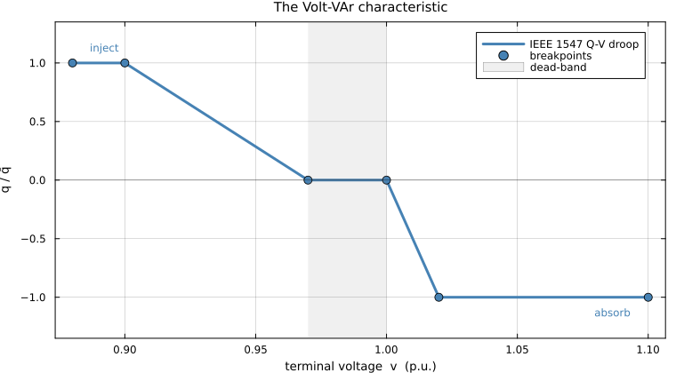
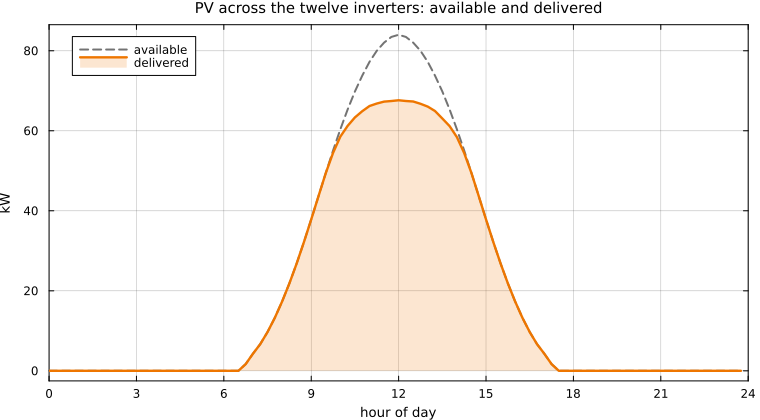
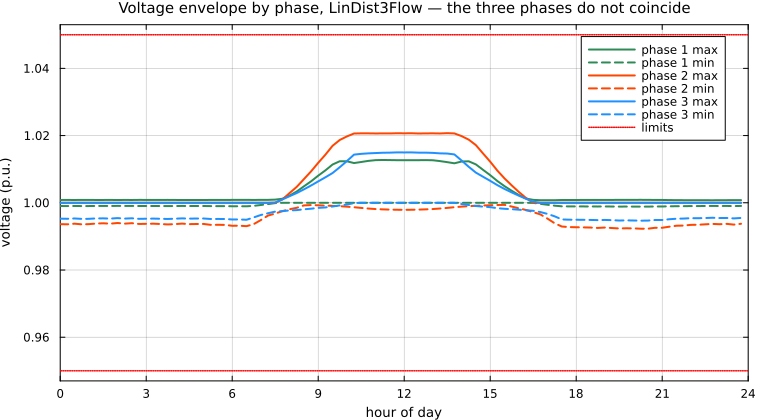
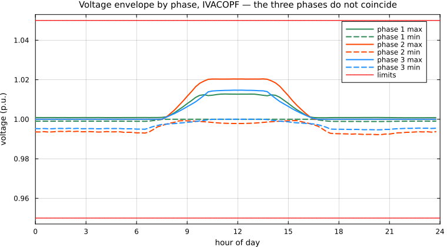
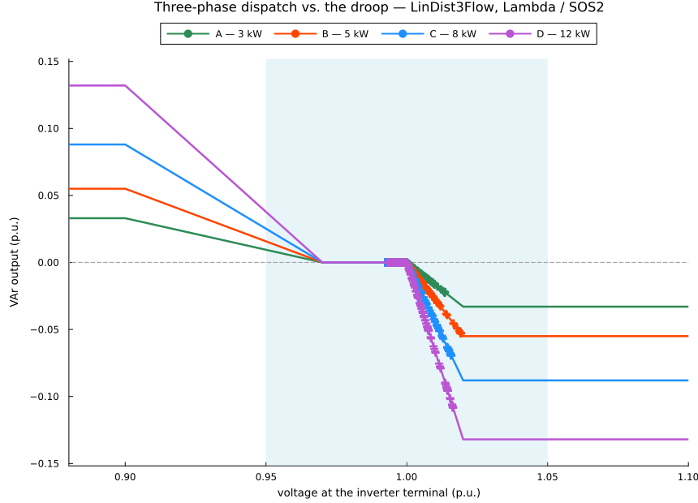
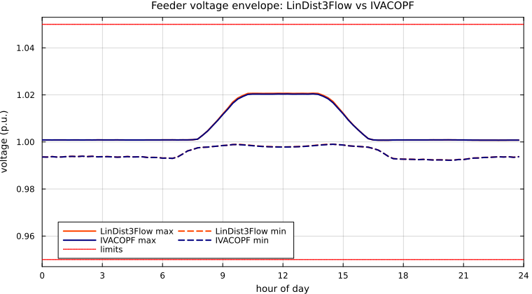

Modeling Smart Inverters in Three-Phase Distribution Optimal Power Flow
A smart inverter does not accept a reactive-power set-point as an input. Rather, it follows a Volt-VAr curve: it measures its own terminal voltage and decides, on its own, how much reactive power to inject or absorb. A distribution optimal power flow (DOPF) problem that ignores the curve will return a reactive dispatch that could be unsuitable at the local inverter controller level.
Real low-voltage feeders are unbalanced. Loads and rooftop inverters connect between one phase and neutral, so the three phases carry different currents and sit at different voltages, and an inverter on phase a senses a different terminal voltage from its neighbour on phase b at the very same bus. This tutorial is three-phase throughout: every formulation, every host and every result below is written for an unbalanced multiphase network.
It shows three ways to embed the Volt-VAr curve into a three-phase DOPF, so that every dispatch point the solver returns is one the inverter would actually produce. All three are exact formulations of the curve and, on the case study below, all three return the same answer. What separates them is the solver technology they demand and how they scale.
To keep the separation between encoding and network model measurable rather than merely asserted, the three encodings are run against two three-phase hosts, a linear one and a near-exact one. Six runs, one curve, and an exact power flow to decide between the hosts.
Both feeders used below are real Electricity North West low-voltage networks from the Low Voltage Network Solutions project, Kron-reduced to three wires: network_5_Feeder_2 [14] for the case study and network_17_Feeder_6 [15] for the scalability check. The Kron reduction follows [16], and the conductor impedances are those of [17].
Prerequisites
Everything on this page is Julia: the code blocks run in Julia, and the six example scripts in the repository are Julia programs. No prior Julia knowledge is assumed, but the environment has to be set up before any of it will run.
Getting Julia
This package requires Julia 1.10 or newer, and is tested on 1.10 and on the current release. If you do not have Julia yet, install it with juliaup, or via the Microsoft Store (or winget install julia -s msstore) on Windows, or with curl -fsSL https://install.julialang.org | sh on macOS and Linux.
Alternatively, take an installer from julialang.org/downloads.
Get the code
The six example scripts, both feeders, the load and irradiance profiles and the committed results all live in the repository, so the first step is to clone it. Every command on this page is run from the directory this creates:
git clone https://github.com/epsrlab-ub/SmartInverter-3P-DOPF.jl
cd SmartInverter-3P-DOPF.jlChoosing an environment
Julia installs packages into an environment, and a fresh environment starts out empty. Plain julia uses the shared default environment; julia --project=. uses the one described by the Project.toml in the current directory.
The three-phase example scripts are standalone: they carry their own Project.toml, they do not depend on this repository being installed as a package, and one command installs everything they need:
julia --project=examples/three_phase -e "using Pkg; Pkg.instantiate()"That is the whole setup. The sections below matter mainly when you are assembling an environment of your own.
Packages
Every package the three-phase scripts use is in the General registry, Julia's default package catalogue, so it can be added by name:
using Pkg
Pkg.add(["JuMP", "JSON3", "Plots"]) # modelling, data files, figures
Pkg.add(["Printf", "LinearAlgebra"]) # standard library| package | what it is for |
|---|---|
JuMP | the modelling layer every formulation on this page is written in |
JSON3 | reading the feeder, load and irradiance files, and the committed results |
Plots | every figure |
Printf | formatting the printed output and the tables |
LinearAlgebra | the 3×3 phase impedances that make the network model three-phase |
The last two ship with Julia, but a project environment still has to add them before using will find them. Make sure all of this is installed in the same environment you run the code from. Pkg.status() lists what the active environment already has, and a using line that raises ArgumentError: Package X not found means Pkg.add("X") has not been run for it.
If you also want the Julia package in src/ (still named SmartInverterDOPF) rather than only the standalone scripts, it is not in the registry and installs from its Git URL:
Pkg.add(url = "https://github.com/epsrlab-ub/SmartInverter-3P-DOPF.jl")Solvers
Two of the three encodings produce a mixed-integer linear program (MILP) and need an MILP solver; the third produces a nonlinear program (NLP) and needs an NLP solver. Both solvers used here are in the General registry:
Pkg.add(["Gurobi", "Ipopt"])| encoding | model class | solver used here |
|---|---|---|
| Big-M, Lambda / SOS2 | MILP | Gurobi |
| Heaviside | NLP | Ipopt |
Gurobi is commercial and needs a licence, and is free for academic users. Ipopt is open source and needs no licence, so the Heaviside route runs with no commercial software at all.
Installing Gurobi
Pkg.add("Gurobi") installs the wrapper and, with it, the Gurobi binaries from Gurobi_jll, so there is no separate solver download to do. What it does not install is a licence, and the size-limited trial licence that ships with those binaries is nowhere near enough for the models here: the case study builds a few hundred thousand variables and the scalability check 3.3 million.
To get one, register at gurobi.com and request a licence, which is free for academics. What you do next depends on the licence type.
A Web License Service (WLS) licence is a file named gurobi.lic, holding your WLSACCESSID, WLSSECRET and LICENSEID. Save it in your home directory and nothing further is needed:
| home directory | the file goes at | |
|---|---|---|
| Windows | C:\Users\<you>, that is %USERPROFILE% | C:\Users\<you>\gurobi.lic |
| macOS | /Users/<you> | ~/gurobi.lic |
| Linux | /home/<you> | ~/gurobi.lic |
To keep it somewhere else, set the GRB_LICENSE_FILE environment variable to the file's full path and Gurobi will read it from there instead.
A named-user licence is fetched with grbgetkey:
using Pkg
Pkg.add("Gurobi_jll")
import Gurobi_jll
key = "xxxxxxxx-xxxx-xxxx-xxxx-xxxxxxxxxxxx" # your own key
run(`$(Gurobi_jll.grbgetkey()) $key`)If you already run a full Gurobi installation of your own and want Julia to use that instead of the bundled binaries, point GUROBI_HOME at it, opt out, and rebuild:
ENV["GUROBI_HOME"] = "C:\\gurobi1200\\win64" # or /Library/gurobi1200/macos_universal2
ENV["GUROBI_JL_USE_GUROBI_JLL"] = "false"
Pkg.add("Gurobi")
Pkg.build("Gurobi")To confirm the licence is live, solve something trivial:
using JuMP, Gurobi
model = Model(Gurobi.Optimizer)
@variable(model, x >= 0)
@objective(model, Min, x)
optimize!(model) # prints the licence banner, then reports OPTIMALIpopt needs none of this. Pkg.add("Ipopt") is the whole installation.
We also tried the open-source MILP solvers HiGHS and GLPK on this model. Neither worked out. One returned an infeasible status inside the successive-linearisation loop, the other was too slow to finish. The results throughout this documentation are produced with Gurobi.
If no MILP solver is available at all, the Heaviside encoding needs only Ipopt, which is open source, and reaches the same answer. That is a practical reason to consider an integer-free formulation.
Why the curve has to be embedded in the DOPF
IEEE 1547-2018 [1] requires every interconnecting distributed energy resource (DER) to be capable of Volt-VAr control. The utility enables the function and sets the curve; the inverter then runs it autonomously as a local feedback law. An advanced distribution management system (ADMS) can coordinate hundreds of these inverters through a DOPF, but only if that DOPF knows the law each one is following.
Leave the curve out and the DOPF treats each inverter's reactive output as a free decision variable inside its apparent-power circle. It will pick whatever value minimises the objective. The inverter, meanwhile, is looking at its own terminal voltage and producing something else entirely. The dispatch is not merely suboptimal; it is not physically realisable.
Put the curve in, and the feasible set shrinks to exactly the points the fleet can actually reach. As a bonus, once the curve is an algebraic object inside the model, its breakpoints can themselves become decision variables, which is how droop curves get optimised rather than merely respected.
On an unbalanced feeder the argument is sharper still. The inverters on a low-voltage network are single-phase devices scattered across the three phases, and the phase they sit on decides the voltage they read. Two identically rated inverters can therefore sit on different segments of the same curve at the same instant, one idle in the dead-band and the other absorbing hard, purely because their phases sit at different voltages. A model that cannot tell the phases apart cannot predict what either of them will do; the spread between the three phases on the feeder used below is Figures 3 and 4.
The IEEE 1547 Volt-VAr law
The characteristic specified in IEEE Std 1547-2018 [1] is piecewise linear in five segments, defined by six breakpoint voltages $V^{\text{bp}}_1 \le \dots \le V^{\text{bp}}_6$ and the reactive set-point at each. Writing $\bar q_i$ for the reactive capability of inverter $i$ and $v_i$ for the voltage it senses at its own terminal:
\[q_i(v_i) \;=\; \begin{cases} \bar q_i, & V^{\text{bp}}_1 \le v_i \le V^{\text{bp}}_2 \quad\text{(full injection)}\\[4pt] \bar q_i \dfrac{V^{\text{bp}}_3 - v_i}{V^{\text{bp}}_3 - V^{\text{bp}}_2}, & V^{\text{bp}}_2 \le v_i \le V^{\text{bp}}_3 \quad\text{(sloped)}\\[6pt] 0, & V^{\text{bp}}_3 \le v_i \le V^{\text{bp}}_4 \quad\text{(dead-band)}\\[4pt] -\bar q_i \dfrac{v_i - V^{\text{bp}}_4}{V^{\text{bp}}_5 - V^{\text{bp}}_4}, & V^{\text{bp}}_4 \le v_i \le V^{\text{bp}}_5 \quad\text{(sloped)}\\[6pt] -\bar q_i, & V^{\text{bp}}_5 \le v_i \le V^{\text{bp}}_6 \quad\text{(full absorption)} \end{cases} \tag{1}\]
Low voltage means inject reactive power to hold the voltage up; high voltage means absorb it. Between the two sits a dead-band in which the inverter does nothing, so that small fluctuations do not provoke needless reactive flow.
Vbp, qshape = collect(Float64, tpc.Vbp), collect(Float64, tpc.qshape)
plot(Vbp, qshape, lw = 3, color = :steelblue, label = "IEEE 1547 Q-V droop",
xlabel = "terminal voltage v (p.u.)", ylabel = "q / q̄",
title = "The Volt-VAr characteristic", ylims = (-1.35, 1.35), legend = :topright)
scatter!(Vbp, qshape, ms = 5, color = :steelblue, label = "breakpoints")
vspan!([Vbp[3], Vbp[4]], color = :grey, alpha = 0.12, label = "dead-band")
hline!([0], color = :black, lw = 0.6, alpha = 0.5, label = false)
annotate!([(Vbp[1] + 0.007, 1.13, text("inject", 8, :left, :steelblue)),
(Vbp[6] - 0.007, -1.13, text("absorb", 8, :right, :steelblue))])
Figure 1. The IEEE 1547 Volt-VAr characteristic: a five-segment piecewise-linear law relating the inverter's own terminal voltage to its reactive output.
The curve used throughout this tutorial is the package default: breakpoints inside the range the standard [1] permits the utility to set, and the values used in [6]:
Table 1. The IEEE 1547 Volt-VAr curve used throughout: six breakpoint voltages and the reactive output at each, normalised by the inverter's reactive capability $\bar q$.
| $V^{\text{bp}}_1$ | $V^{\text{bp}}_2$ | $V^{\text{bp}}_3$ | $V^{\text{bp}}_4$ | $V^{\text{bp}}_5$ | $V^{\text{bp}}_6$ | |
|---|---|---|---|---|---|---|
| voltage (p.u.) | 0.88 | 0.90 | 0.97 | 1.00 | 1.02 | 1.10 |
| $q/\bar q$ | 1 | 1 | 0 | 0 | -1 | -1 |
Why an "if-else" cannot go straight into a solver
The law above is a definition by cases, and that is exactly what a solver cannot read. Two distinct obstacles follow.
Conditional logic. Which of the five expressions applies depends on $v_i$, which is itself a decision variable. Branching on the value of an unknown is not an algebraic constraint, and an algebraic constraint is the only thing a solver accepts.
Non-differentiability. Even setting the branching aside, the slope jumps at every breakpoint. Newton and interior-point methods build their steps from derivatives, and at a kink the derivative does not exist.
There are two ways out, and they define the rest of this tutorial:
- Introduce integer variables to encode the logic exactly. The model becomes an MILP. This is the Big-M and Lambda / special-ordered-set-of-type-2 (SOS2) route.
- Write the logic in closed algebraic form using step functions. The model stays integer-free but becomes non-smooth, so it needs an NLP solver. This is the Heaviside route.
Before the details, here is the whole comparison on one screen. Each method answers a different question, and that choice determines everything else about it:
Table 2. The three exact encodings of the droop at a glance.
| Big-M | Lambda / SOS2 | Heaviside | |
|---|---|---|---|
| the question it asks | which segment is active? | which two breakpoints am I between? | none; the algebra selects |
| the device | one binary per segment, plus a large constant $M$ | shared weights $\lambda_b$, plus SOS2 adjacency | products of unit steps |
| extra variables, per inverter per time step | 5 binary + 2 continuous | 5 binary + 6 continuous | none |
| model class | MILP | MILP | NLP, non-smooth |
| anything to tune? | yes, the value of $M$ | no | no |
| introduced in | [5] | [6], [7] | [10] |
The three columns are three answers to one question: how do you say "it depends" to a solver? Each pays for exactness in a different currency: a constant you must choose, a combinatorial structure, or differentiability.
The one scalar the droop needs from the network
The droop is a self-contained module. Whatever DOPF you use, it exposes a voltage magnitude at each inverter terminal; the droop module adds the relationship tying that inverter's reactive output to that voltage:
┌────────────────────────────┐
│ three-phase DOPF │
│ network model + limits │
└───────┬────────────▲───────┘
exposes v_b^φ │ │ q_i^G sets
┌───────▼────────────┴───────┐
│ Q-V droop module │
│ the IEEE 1547 curve │
└────────────────────────────┘On a three-phase network that interface needs one sentence of care, and it is the only place phases enter the droop at all. Take the bus set $\Upsilon$, the phase set $\Psi = \{a,b,c\}$ and the inverter fleet $\mathcal{G}$. A rooftop inverter is a single-phase device connected line-to-neutral, so inverter $i \in \mathcal{G}$ has a bus $b(i) \in \Upsilon$ and a phase $\varphi(i) \in \Psi$, and the voltage it senses is that bus on that phase alone:
\[v_i \;:=\; v_{b(i)}^{\varphi(i)}, \qquad i \in \mathcal{G}\]
Every constraint in the three sections below is written in terms of this one scalar per inverter per time step, together with that inverter's reactive output $q_i^{G}$ and its reactive capability $\bar q_i$. The time index $t \in \{1,\dots,T\}$ is suppressed throughout; on the case study $T = 96$, a full day at 15-minute resolution.
Two consequences are worth stating before the algebra starts, because they are what make the droop portable.
The encodings do not know what a phase is. Each asks the host for one scalar voltage variable and constrains one scalar reactive output against it. Whether that terminal is identified by a bus, or by a bus and a phase, changes the subscript and nothing else. That is why the same three blocks drop unchanged into either of the two hosts below: in LinDist3Flow $v_b^{\varphi}$ is a decision variable directly, in the three-phase IVACOPF it is a linearised voltage magnitude, and the droop neither knows nor cares.
The counting does change. A balanced single-phase study puts one inverter at a bus; an unbalanced LV feeder can put a single-phase inverter at every service connection, and the binaries in Big-M and Lambda scale with inverters × time steps. On the case study below, twelve inverters over 96 steps come to 5760 binaries. That is the arithmetic that eventually makes the integer-free encoding look attractive, and it is measured in Does it scale?.
In the JuMP snippets below, PV is the vector of inverter sites, each carrying a bus, a phase and a rating Smax; v is whatever voltage variable the host exposes, indexed by bus, phase and time step; and vpv is the sensing map written out:
vpv(i, t) = v[PV[i].bus, PV[i].phase, t] # the voltage inverter i actually sensesThe hosts themselves come after the three encodings.
Method A — Big-M
Following Savasci, Inaolaji and Paudyal [5], where this formulation was introduced for a second-order-cone DOPF; also Chapter 4 of Inaolaji's dissertation [9].
The idea in one sentence. Give every segment its own on/off switch, and write constraints that are switched off, made trivially true, whenever their segment is not the active one.
That switching-off is what "big-M" means. Take any constraint you want to enforce only when a binary $\delta$ equals 1, and add $M(1-\delta)$ to its right-hand side. If $\delta = 1$ the added term vanishes and the constraint bites. If $\delta = 0$ the right-hand side becomes so large that the constraint cannot possibly be violated; it is still present in the model, but it no longer restricts anything. One constant, $M$, buys you an if-statement.
Everything below is written per inverter $i \in \mathcal{G}$, and the voltage it reasons about is the one its own phase at its own bus, $v_i = v_{b(i)}^{\varphi(i)}$. A fleet of twelve single-phase inverters spread over three phases therefore carries twelve independent copies of this system at every time step.
Step 1: exactly one segment is active. Introduce a binary $\delta_{i,b}$ for each of the five segments of inverter $i$ and require
\[\sum_{b=1}^{5}\delta_{i,b}=1, \qquad \forall i \in \mathcal{G} . \tag{2}\]
Step 2: each switch owns a voltage window. If segment $b$ is the active one, then the sensed voltage must lie in that segment's range $[V^{\text{bp}}_{b}, V^{\text{bp}}_{b+1}]$. Written once with the phase visible, so there is no doubt which voltage is meant,
\[V^{\text{bp}}_{b} - M(1-\delta_{i,b}) \;\le\; v_{b(i)}^{\varphi(i)} \;\le\; V^{\text{bp}}_{b+1} + M(1-\delta_{i,b}),\]
and in big-M form that is one two-sided inequality per segment. Writing all five out, with $v_i$ for $v_{b(i)}^{\varphi(i)}$ from here on, gives the complete window system:
\[\begin{aligned} -(1-\delta_{i,1})M + V^{l}\;\; &\le v_i \le\;\; V^{\text{bp}}_{2} + (1-\delta_{i,1})M\\ -(1-\delta_{i,2})M + V^{\text{bp}}_{2} &\le v_i \le\;\; V^{\text{bp}}_{3} + (1-\delta_{i,2})M\\ -(1-\delta_{i,3})M + V^{\text{bp}}_{3} &\le v_i \le\;\; V^{\text{bp}}_{4} + (1-\delta_{i,3})M\\ -(1-\delta_{i,4})M + V^{\text{bp}}_{4} &\le v_i \le\;\; V^{\text{bp}}_{5} + (1-\delta_{i,4})M\\ -(1-\delta_{i,5})M + V^{\text{bp}}_{5} &\le v_i \le\;\; V^{u} + (1-\delta_{i,5})M \end{aligned} \tag{3}\]
Each row is vacuous when its $\delta_{i,b} = 0$ and binding when $\delta_{i,b} = 1$, so together with Step 1 the solver is forced to pick the segment that genuinely contains $v_i$. Note the two outer rows: the first segment is bounded below by the voltage variable's own lower bound $V^{l}$ and the last above by $V^{u}$, rather than by $V^{\text{bp}}_{1}$ and $V^{\text{bp}}_{6}$. That keeps the model feasible if $v_i$ ever sits outside the range the curve was drawn over; the saturated laws simply continue to apply.
Step 3: assemble the droop law, and watch it turn nonlinear. With the switches in place, $q_i^G$ is just the sum of the five segment laws, each weighted by its own binary. Segments 1, 3 and 5 contribute constants ($\bar q_i$, $0$, $-\bar q_i$); the two sloped segments contribute their affine laws, written in slope-intercept form:
\[q_i^G \;=\; \delta_{i,1}\,\bar q_i \;+\; \delta_{i,2}\!\left(\alpha_{i,1} v_i + \frac{\bar q_i V^{\text{bp}}_3}{V^{\text{bp}}_3 - V^{\text{bp}}_2}\right) \;+\; \delta_{i,3}\cdot 0 \;+\; \delta_{i,4}\!\left(\alpha_{i,2} v_i + \frac{\bar q_i V^{\text{bp}}_4}{V^{\text{bp}}_5 - V^{\text{bp}}_4}\right) \;+\; \delta_{i,5}\left(-\bar q_i\right) \tag{4}\]
with slopes $\alpha_{i,1} = -\bar q_i/(V^{\text{bp}}_3-V^{\text{bp}}_2)$ and $\alpha_{i,2} = -\bar q_i/(V^{\text{bp}}_5-V^{\text{bp}}_4)$. Both are inverter-specific, because $\bar q_i$ is: on the case study below the fleet carries four size classes, so four different pairs of slopes appear in one model.
This is a correct statement of the curve: exactly one $\delta_{i,b}$ equals 1, so exactly one bracket survives and $q_i^G$ takes that segment's value. But it is not linear. Multiply the two sloped brackets out and the offending terms appear:
\[\underbrace{\delta_{i,2}\,\alpha_{i,1} v_i}_{\text{bilinear}} \qquad\text{and}\qquad \underbrace{\delta_{i,4}\,\alpha_{i,2} v_i}_{\text{bilinear}}\]
Each is a product of two decision variables: one binary, one continuous. Everything else in the expression is a variable times a constant. So the whole difficulty of the Big-M formulation reduces to these two products, and if they can be removed the model becomes a plain MILP.
Step 4: remove the two products, exactly. The saving grace is that $\delta_{i,b}$ is binary rather than merely continuous, and $v_i$ is bounded. Under those two conditions each product can be replaced by a new continuous variable $W_{i,b} := \delta_{i,b} v_i$ and four linear inequalities, with no approximation whatsoever:
\[-M(1-\delta_{i,b}) \;\le\; v_i - W_{i,b} \;\le\; M(1-\delta_{i,b}), \qquad V^{\text{bp}}_{b}\,\delta_{i,b} \;\le\; W_{i,b} \;\le\; V^{\text{bp}}_{b+1}\,\delta_{i,b} . \tag{5}\]
Check the two cases and the exactness is immediate. If $\delta_{i,b} = 1$, the left pair forces $W_{i,b} = v_i$ and the right pair confines $v_i$ to the segment. If $\delta_{i,b} = 0$, the right pair forces $W_{i,b} = 0$ (both bounds collapse to zero) while the left pair goes slack. Either way $W_{i,b}$ equals $\delta_{i,b} v_i$ exactly: this is a reformulation, not a relaxation.
Only segments 2 and 4 need this treatment, and for those the $W_{i,b}$ bounds already pin $v_i$ into the segment, so their Step-2 window rows are replaced rather than added to. The complete constraint system for the Big-M droop is therefore:
\[\begin{aligned} -(1-\delta_{i,1})M + V^{l}\;\; &\le v_i \le\; V^{\text{bp}}_{2} + (1-\delta_{i,1})M\\[2pt] -M(1-\delta_{i,2}) \;&\le\; v_i - W_{i,2} \;\le\; (1-\delta_{i,2})M\\ V^{\text{bp}}_{2}\,\delta_{i,2} \;&\le\; W_{i,2} \;\le\; V^{\text{bp}}_{3}\,\delta_{i,2}\\[2pt] -(1-\delta_{i,3})M + V^{\text{bp}}_{3} &\le v_i \le\; V^{\text{bp}}_{4} + (1-\delta_{i,3})M\\[2pt] -M(1-\delta_{i,4}) \;&\le\; v_i - W_{i,4} \;\le\; (1-\delta_{i,4})M\\ V^{\text{bp}}_{4}\,\delta_{i,4} \;&\le\; W_{i,4} \;\le\; V^{\text{bp}}_{5}\,\delta_{i,4}\\[2pt] -(1-\delta_{i,5})M + V^{\text{bp}}_{5} &\le v_i \le\; V^{u} + (1-\delta_{i,5})M \end{aligned} \tag{6}\]
Read alongside the Step-2 system, the change is visible: rows 2 and 4, the sloped segments, have each become a $W$ definition plus a $W$ range, while the three flat segments keep their original windows unchanged.
Now substitute $\delta_{i,2} v_i \to W_{i,2}$ and $\delta_{i,4} v_i \to W_{i,4}$ in the Step 3 expression. Nothing else changes, and the droop law becomes a single linear equation in which every coefficient is a constant:
\[q_i^G = \delta_{i,1}\bar q_i + \alpha_{i,1} W_{i,2} + \delta_{i,2}\frac{\bar q_i V^{\text{bp}}_3}{V^{\text{bp}}_3 - V^{\text{bp}}_2} + \alpha_{i,2} W_{i,4} + \delta_{i,4}\frac{\bar q_i V^{\text{bp}}_4}{V^{\text{bp}}_5 - V^{\text{bp}}_4} - \delta_{i,5}\bar q_i, \qquad \forall i \in \mathcal{G} \tag{7}\]
Compare it with the Step 3 version: the two bracketed sloped terms have simply been split into a $W$ term and a $\delta$ term. That substitution is the entire content of the Big-M droop model.
In JuMP, with npv inverters and T time steps, and vpv(i, t) the sensing map of the previous section:
Mbig = 1.1
@variable(model, δ[1:5, 1:npv, 1:T], Bin)
@variable(model, W2[1:npv, 1:T])
@variable(model, W4[1:npv, 1:T])
@constraint(model, [i in 1:npv, t in 1:T], sum(δ[j, i, t] for j in 1:5) == 1)
# flat segments 1, 3, 5: the binary only switches on a voltage window
for (j, lo, hi) in ((1, 1, 2), (3, 3, 4), (5, 5, 6))
@constraint(model, [i in 1:npv, t in 1:T], vpv(i,t) >= VBP[lo] - Mbig * (1 - δ[j,i,t]))
@constraint(model, [i in 1:npv, t in 1:T], vpv(i,t) <= VBP[hi] + Mbig * (1 - δ[j,i,t]))
end
# sloped segments 2 and 4: W = δ·v, whose bounds double as the window
for (j, W, lo, hi) in ((2, W2, 2, 3), (4, W4, 4, 5))
@constraint(model, [i in 1:npv, t in 1:T], vpv(i,t) - W[i,t] >= -Mbig * (1 - δ[j,i,t]))
@constraint(model, [i in 1:npv, t in 1:T], vpv(i,t) - W[i,t] <= Mbig * (1 - δ[j,i,t]))
@constraint(model, [i in 1:npv, t in 1:T], W[i,t] >= VBP[lo] * δ[j,i,t])
@constraint(model, [i in 1:npv, t in 1:T], W[i,t] <= VBP[hi] * δ[j,i,t])
end
# the droop law itself, eq. (7)
@constraint(model, [i in 1:npv, t in 1:T],
Qdg[i,t] == δ[1,i,t] * PV[i].Smax
+ W2[i,t] * (-PV[i].Smax / (VBP[3] - VBP[2]))
+ δ[2,i,t] * (PV[i].Smax * VBP[3] / (VBP[3] - VBP[2]))
+ W4[i,t] * (-PV[i].Smax / (VBP[5] - VBP[4]))
+ δ[4,i,t] * (PV[i].Smax * VBP[4] / (VBP[5] - VBP[4]))
- δ[5,i,t] * PV[i].Smax)PV[i].Smax is inverter $i$'s reactive capability $\bar q_i$, and vpv(i,t) is the only line in the block that knows the network is three-phase.
$M$ only has to dominate the largest possible violation of a deactivated constraint, which here is set by the voltage bounds. A needlessly large $M$ leaves the LP relaxation loose, the branch-and-bound tree deep, and the solve slow. The value used here is 1.1.
The cost of exactness is bookkeeping: five binaries per inverter per time step, plus two auxiliary continuous variables. On the twelve-inverter, 96-step case study that is 5760 binaries and 2304 auxiliary continuous variables, and both counts grow with the fleet.
Method B — Lambda / SOS2
Following Inaolaji, Savasci and Paudyal [6] and its three-phase extension [7], which apply the classical lambda method to Volt-VAr and Volt-Watt droops on a LinDistFlow host; see also Chapter 5 of [9].
The idea in one sentence. Instead of asking which segment am I on, describe the operating point directly as a blend of two neighbouring breakpoints.
Big-M starts from the case distinction and works to make it linear. Lambda never forms the case distinction at all. It uses a fact about piecewise-linear curves: every point on the curve is a weighted average of two adjacent breakpoints, and nothing else is.
So attach a weight $\lambda_{i,b} \ge 0$ to each of the six breakpoints of inverter $i$, make the weights sum to one, and build both coordinates from the same weights. Written once with the phase visible,
\[v_{b(i)}^{\varphi(i)} = \sum_{b=1}^{6}\lambda_{i,b} V^{\text{bp}}_b,\]
and then, with $v_i$ for that same quantity,
\[v_i = \sum_{b=1}^{6}\lambda_{i,b} V^{\text{bp}}_b, \qquad q_i^G = \sum_{b=1}^{6}\lambda_{i,b}\, q^{\text{bp}}_{i,b}, \qquad \sum_{b=1}^{6}\lambda_{i,b} = 1, \qquad \lambda_{i,b} \ge 0 . \tag{8}\]
The single shared $\lambda$ is the whole trick. Because one set of weights generates the voltage and the reactive power, the pair $(v_i, q_i^G)$ cannot drift off the curve: move the weights and both coordinates slide together along it. Both $V^{\text{bp}}_b$ and the ordinates $q^{\text{bp}}_{i,b} = \bar q_i\,(q/\bar q)_b$ are constants, so these are ordinary linear constraints, and no $M$ needs choosing anywhere. Note that only the ordinates carry the inverter index: the six breakpoint voltages are the utility's setting and are shared by the whole fleet, while the six reactive values are scaled by each inverter's own capability.
The catch. As written, the weights describe the convex hull of the six breakpoints, not the curve. Nothing yet stops the solver putting weight on $\lambda_{i,1}$ and $\lambda_{i,5}$ simultaneously, which lands the operating point somewhere in the interior of that hull, a $(v, q)$ pair the inverter would never produce. Since interior points give the optimiser more reactive power at a given voltage than the real device offers, it will happily take them.
The fix is the classical SOS2 condition: at most two weights may be nonzero, and they must be adjacent. That is exactly the "blend of two neighbouring breakpoints" statement, imposed rather than hoped for. Introduce one binary $z_{i,b}$ per segment, five of them for six breakpoints, and write, in full:
\[\begin{aligned} \lambda_{i,1} &\le z_{i,1}\\ \lambda_{i,2} &\le z_{i,1} + z_{i,2}\\ \lambda_{i,3} &\le z_{i,2} + z_{i,3}\\ \lambda_{i,4} &\le z_{i,3} + z_{i,4}\\ \lambda_{i,5} &\le z_{i,4} + z_{i,5}\\ \lambda_{i,6} &\le z_{i,5}\\[2pt] \sum_{b=1}^{5} z_{i,b} &= 1, \qquad z_{i,b} \in \{0,1\} \end{aligned} \tag{9}\]
Read it as: $z_{i,b} = 1$ names the active segment; a weight $\lambda_{i,b}$ is allowed to be nonzero only if breakpoint $b$ is an endpoint of that segment. Since exactly one $z_{i,b}$ is 1, precisely two adjacent weights survive and every other weight is forced to zero. The blend is back on the curve.
Trace one case to see it work. Suppose $z_{i,3} = 1$ and every other $z_{i,b} = 0$. Rows 1, 2 and 6 then force $\lambda_{i,1} = \lambda_{i,2} = \lambda_{i,6} = 0$; row 5 forces $\lambda_{i,5} = 0$; and only $\lambda_{i,3} \le 1$ and $\lambda_{i,4} \le 1$ survive. With $\sum_b \lambda_{i,b} = 1$ the operating point is a blend of breakpoints 3 and 4 alone, that is, a point on segment 3, the dead-band.
Collecting everything, the complete Lambda droop model is:
\[\begin{aligned} v_i &= \sum_{b=1}^{6}\lambda_{i,b} V^{\text{bp}}_b\\ q_i^G &= \sum_{b=1}^{6}\lambda_{i,b}\, q^{\text{bp}}_{i,b}\\ \sum_{b=1}^{6}\lambda_{i,b} &= 1, \qquad \lambda_{i,b} \ge 0\\ \lambda_{i,1} \le z_{i,1}, \quad \lambda_{i,b} &\le z_{i,b-1} + z_{i,b} \;\;(b=2,\dots,5), \quad \lambda_{i,6} \le z_{i,5}\\ \sum_{b=1}^{5} z_{i,b} &= 1, \qquad z_{i,b} \in \{0,1\} \end{aligned} \qquad \forall i \in \mathcal{G} \tag{10}\]
Seven constraint rows and no constant to tune; compare that with the Big-M system above.
Worth noticing what is absent: no big-M constant, and no product of a binary with a continuous variable. The binaries here only switch other variables off, a much better-behaved use of integrality, and the reason this formulation tends to give tighter relaxations than Big-M on the same curve.
@variable(model, λ[1:6, 1:npv, 1:T] >= 0)
@variable(model, z[1:5, 1:npv, 1:T], Bin)
@constraint(model, [i in 1:npv, t in 1:T], sum(λ[j, i, t] for j in 1:6) == 1)
@constraint(model, [i in 1:npv, t in 1:T], sum(z[j, i, t] for j in 1:5) == 1)
@constraint(model, [i in 1:npv, t in 1:T], λ[1, i, t] <= z[1, i, t])
@constraint(model, [j in 2:5, i in 1:npv, t in 1:T], λ[j, i, t] <= z[j-1, i, t] + z[j, i, t])
@constraint(model, [i in 1:npv, t in 1:T], λ[6, i, t] <= z[5, i, t])
# the two coordinates, built from the same weights
@constraint(model, [i in 1:npv, t in 1:T], vpv(i, t) == sum(λ[j,i,t] * VBP[j] for j in 1:6))
@constraint(model, [i in 1:npv, t in 1:T],
Qdg[i, t] == sum(λ[j,i,t] * QSHAPE[j] * PV[i].Smax for j in 1:6))QSHAPE is the normalised ordinate vector $(1, 1, 0, 0, -1, -1)$ of Table 1, and multiplying it by PV[i].Smax is what gives each size class its own curve. As in Big-M, vpv(i, t) is the only three-phase line in the block.
Most MILP solvers support SOS2 natively via MOI.SOS2, which lets the solver branch on the set directly instead of on explicit binaries. The formulation above is written out longhand because it is portable and because it makes the logic visible, which is the point of a tutorial.
The Lambda form has a decisive practical advantage over Big-M once you stop treating the curve as fixed. The breakpoint voltages $V^{\text{bp}}_b$ appear linearly here, and in only one place. Make them decision variables, so the DOPF chooses the curve as well as the dispatch, and exactly one product turns bilinear:
\[v_i = \sum_{b=1}^{6}\lambda_{i,b} V^{\text{bp}}_b \tag{11}\]
A single, well-understood bilinear term, routinely handled by a McCormick envelope and tightened by partitioning the breakpoint range if the relaxation is too loose. The reactive equation $q_i^G = \sum_b \lambda_{i,b} q^{\text{bp}}_{i,b}$ is untouched, since the ordinates stay constant.
Big-M remains exact under the same change (nothing about it stops representing the curve), but the nonlinearity it acquires is both more widespread and of a worse kind. The slopes $\alpha_{i,1} = -\bar q_i/(V^{\text{bp}}_3 - V^{\text{bp}}_2)$ and $\alpha_{i,2}$ become rational functions of the breakpoints, so in the droop law the terms $\alpha_{i,1} W_{i,2} + \delta_{i,2}\,\bar q_i V^{\text{bp}}_3/(V^{\text{bp}}_3 - V^{\text{bp}}_2)$ and their segment-4 counterparts are nonlinear in $V^{\text{bp}}$ rather than merely bilinear; and the segment bounds $V^{\text{bp}}_b \delta_{i,b} \le W_{i,b} \le V^{\text{bp}}_{b+1}\delta_{i,b}$ pick up further products of breakpoints with binaries. Lambda confines the whole difficulty to one term; Big-M spreads it across the droop law and the bounds. That is why work on optimised and adaptive droop curves is normally built on Lambda [8], [11].
The bookkeeping matches Big-M's binary count and exceeds its continuous one: five binaries and six weights per inverter per time step, so 5760 binaries and 6912 weights on the case study below.
Method C — Heaviside
Following Inaolaji, Savasci and Paudyal [10], which introduced this encoding precisely to remove the integer variables from the two formulations above, on a current-voltage DOPF host of the same family used here; see also Chapter 6 of [9].
The idea in one sentence. Keep the case distinction, but write it as arithmetic instead of logic, so there is nothing for a solver to branch on.
Both previous methods spend integer variables to answer "which segment?". Integers are what make a model combinatorial: the count grows with inverters × time steps, and branch-and-bound has to search over them. On an unbalanced LV feeder that product is the whole problem, because the fleet is made of single-phase devices and there can be one at every service connection. The motivation in [10] is to get rid of the integers altogether, which also makes the model a candidate for real-time use.
The observation is that an "if" is just an on/off switch, and the unit step is an on/off switch written as a function:
\[H(x) = \begin{cases} 1, & x \ge 0\\ 0, & x < 0\end{cases} \tag{12}\]
Shift it to flip at a breakpoint and subtract two of them, and you get a window that equals 1 on one segment and 0 everywhere else:
\[\mathcal{W}_{i,b} \;=\; H\!\left(v_i - V^{\text{bp}}_{b}\right) - H\!\left(v_i - V^{\text{bp}}_{b+1}\right), \qquad v_i = v_{b(i)}^{\varphi(i)} \tag{13}\]
which is precisely the condition $V^{\text{bp}}_b \le v_i \le V^{\text{bp}}_{b+1}$: the if-else of segment $b$, written without logic and without binaries. Multiply each segment's law by its own window and add them up. The windows are disjoint, so at any voltage all but one vanish and the sum collapses to the single active law.
Written out with every window expanded, and with all five segments present so the structure is visible:
\[\begin{aligned} q_i^G \;=\; &\;\;\;\;\bar q_i \big[\,H(v_i - V^{\text{bp}}_1) - H(v_i - V^{\text{bp}}_2)\,\big] \;+\\ &\;\alpha_{i,1}\!\left(v_i - V^{\text{bp}}_3\right)\big[\,H(v_i - V^{\text{bp}}_2) - H(v_i - V^{\text{bp}}_3)\,\big] \;+\\ &\;\;\;\;0\,\big[\,H(v_i - V^{\text{bp}}_3) - H(v_i - V^{\text{bp}}_4)\,\big] \;+\\ &\;\alpha_{i,2}\!\left(v_i - V^{\text{bp}}_4\right)\big[\,H(v_i - V^{\text{bp}}_4) - H(v_i - V^{\text{bp}}_5)\,\big] \;-\\ &\;\;\;\;\bar q_i \big[\,H(v_i - V^{\text{bp}}_5) - H(v_i - V^{\text{bp}}_6)\,\big] \end{aligned} \qquad \forall i \in \mathcal{G} \tag{14}\]
with the same slopes as before, $\alpha_{i,1} = -\bar q_i/(V^{\text{bp}}_3-V^{\text{bp}}_2)$ and $\alpha_{i,2} = -\bar q_i/(V^{\text{bp}}_5-V^{\text{bp}}_4)$.
That is the entire droop model: one equation per inverter per time step, no auxiliary variables, no constraint system to accompany it. Line 3 is written out only for symmetry; being identically zero, it is dropped in the implementation.
This is the one place where it is easy to get the algebra wrong, so it is worth stating explicitly. A sloped term is written $\alpha(v_i - V^{\ast})$ where $V^{\ast}$ is the voltage at which that segment's reactive output passes through zero, namely $V^{\text{bp}}_3$ for segment 2 and $V^{\text{bp}}_4$ for segment 4.
Anchoring anywhere else breaks the curve. Anchor segment 2 at $V^{\text{bp}}_2$ instead, for example, and the term evaluates to $0$ at $V^{\text{bp}}_2$ where the curve should read $\bar q_i$, leaving a jump at the breakpoint. With the anchors above, segment 2 gives $\bar q_i$ at $V^{\text{bp}}_2$ and $0$ at $V^{\text{bp}}_3$, matching the flat segments it joins on either side. The verification section below is what confirms this came out right.
Hstep(x) = op_ifelse(op_greater_than_or_equal_to(x, 0), 1.0, 0.0)
@constraint(model, [i in 1:npv, t in 1:T],
Qdg[i,t] ==
PV[i].Smax * (Hstep(vpv(i,t) - VBP[1]) - Hstep(vpv(i,t) - VBP[2]))
+ (-PV[i].Smax / (VBP[3] - VBP[2])) * (vpv(i,t) - VBP[3]) *
(Hstep(vpv(i,t) - VBP[2]) - Hstep(vpv(i,t) - VBP[3]))
+ (-PV[i].Smax / (VBP[5] - VBP[4])) * (vpv(i,t) - VBP[4]) *
(Hstep(vpv(i,t) - VBP[4]) - Hstep(vpv(i,t) - VBP[5]))
- PV[i].Smax * (Hstep(vpv(i,t) - VBP[5]) - Hstep(vpv(i,t) - VBP[6])))op_ifelse and op_greater_than_or_equal_to are JuMP's nonlinear operators (JuMP ≥ 1.15); they build the expression correctly outside a macro.
No extra variables at all, just one algebraic expression per inverter per time step. The price is paid in solver behaviour. $H(\cdot)$ is discontinuous, so the derivative is undefined at every breakpoint and the problem is non-convex. Two consequences follow: the model needs an NLP solver rather than an MILP one, and the non-smoothness is expensive to differentiate, which makes this the slowest of the three encodings on the case study and the first to break down as the network grows. Does it scale? puts numbers on both.
The three-phase hosts
The droop needs a host, and this tutorial provides two, deliberately, because the pair makes the separation between encoding and host measurable rather than merely asserted:
Table 3. The two three-phase hosts, and the script family implementing each.
| script family | model | class | solve |
|---|---|---|---|
LinDist3Flow_*.jl | LinDist3Flow: multiphase linearised branch flow [12] | linear approximation | one pass |
IVACOPF3Ph_*.jl | IVACOPF: three-phase current-voltage AC-OPF [4] | near-exact AC | successive linearisation, iterated |
Both are set out in full below, briefly, because the subject of this page is the droop rather than the network model, and both carry the three droop blocks just written, the same feeder, the same fleet and the same objective.
The inverter model, shared by both hosts
Everything that is shared between the two hosts is stated once here. Inverter $i$ sits at bus $b(i)$ on phase $\varphi(i)$, carries an array whose available output $\bar p_i(t)$ follows the irradiance profile, and an inverter rated $S_i^{\max}$:
\[\begin{aligned} p_i^{G} &\le \bar p_i(t) & &\text{irradiance ceiling}\\ p_i^{\mathrm{curt}} &= \bar p_i(t) - p_i^{G} \;\ge\; 0 & &\text{curtailment}\\ \cos\theta_l\; p_i^{G} + \sin\theta_l\; q_i^{G} &\in [-S_i^{\max},\, S_i^{\max}], \quad \theta_l = \tfrac{l\pi}{16},\; l = 1,\dots,16 & &\text{capability polygon}\\ q_i^{G} &= q_i\!\left(v_{b(i)}^{\varphi(i)}\right) & &\text{the droop}\\[2pt] \min \; & \textstyle\sum_{i \in \mathcal{G}} \sum_{t} p_i^{\mathrm{curt}} & &\text{objective} \end{aligned} \tag{15}\]
Three of those five lines are worth a sentence each.
The capability polygon. The real constraint is $(p_i^{G})^2 + (q_i^{G})^2 \le (S_i^{\max})^2$, a circle: convex, but nonlinear, and a quadratic constraint would cost the model its MILP class. Following [6] it is replaced by an inscribed $2k$-sided polygon, exactly $2k$ linear constraints that tighten as $k$ grows, with $k = 16$ here for a 32-vertex polygon. Being inscribed, it is conservative: every point it admits is inside the real circle.
The droop, and what is not in the objective. $q_i^{G}$ never appears in the objective function. It is pinned entirely by the fourth line, the curve, encoded exactly by Big-M, Lambda/SOS2 or Heaviside. That is precisely the point of the whole page: the optimiser cannot buy voltage support by choosing reactive power freely, it can only choose active power and live with the reactive response the curve produces at whatever voltage results.
The one scalar the host must supply. $v_{b(i)}^{\varphi(i)}$ is the entire interface between the two halves of the model. Everything the two hosts below disagree about reduces to what they predict for that number.
LinDist3Flow: the linear host
The multiphase form of the LinDistFlow linearisation [3] of the Baran and Wu branch-flow model [2], from Sankur, Dobbe, Stewart, Callaway and Arnold [12]. Each line carries a 3×3 phase impedance $Z$ rather than a scalar and the phases couple, so a scalar $rP + xQ$ drop no longer suffices.
That paper writes KVL and KCL in three-phase vector form and derives the exact Dist3Flow equations, Eqs. (14)–(17) of [12]. Two things in them are nonlinear: the loss terms, and the ratio of voltages between phases at a node, $\gamma_n^{\varphi\psi} = V_n^{\varphi}/V_n^{\psi}$, which scales and rotates the off-diagonal impedances. LinDist3Flow is what follows from holding both constant, under the paper's assumptions A1 ($\gamma$ constant) and A2 (loss terms constant). Fixing $\gamma$ at its nominal value, $1\angle{\pm}120^{\circ}$, and dropping losses altogether gives Eqs. (20)–(23) of [12], the model used here. Per phase $\varphi$:
\[w_j^{\varphi} = w_i^{\varphi} - \sum_{\psi} \Big( a^R_{\varphi\psi} P_{ij}^{\psi} + a^X_{\varphi\psi} Q_{ij}^{\psi} \Big), \qquad \begin{aligned} a^R_{\varphi\psi} &= 2\,\mathrm{Re}\!\left(\alpha^{\psi-\varphi} Z_{\varphi\psi}\right)\\ a^X_{\varphi\psi} &= 2\,\mathrm{Im}\!\left(\alpha^{\psi-\varphi} Z_{\varphi\psi}\right) \end{aligned} \tag{16}\]
with $w = \lvert V\rvert^2$ the squared voltage magnitude and $\alpha = e^{-j2\pi/3}$ the 120° rotation. This is Eq. (21) of [12]. Writing the rotation out term by term recovers its coefficient matrices, Eqs. (22)–(23), exactly, with $a^R = -\mathbb{M}^P$ and $a^X = -\mathbb{M}^Q$:
\[a^R_{ij} = \begin{bmatrix} 2r^{aa} & -r^{ab}+\sqrt{3}\,x^{ab} & -r^{ac}-\sqrt{3}\,x^{ac}\\ -r^{ba}-\sqrt{3}\,x^{ba} & 2r^{bb} & -r^{bc}+\sqrt{3}\,x^{bc}\\ -r^{ca}+\sqrt{3}\,x^{ca} & -r^{cb}-\sqrt{3}\,x^{cb} & 2r^{cc} \end{bmatrix} \tag{17}\]
and $a^X$ identically, with $r$ and $x$ exchanged and the sign of every $\sqrt{3}$ term flipped. Those $\pm\sqrt{3}$ cross-terms are the $120^{\circ}$ rotation written out, and they are what makes this a three-phase model rather than three single-phase ones running side by side. Two checks are worth carrying: for a single phase $\alpha^0 = 1$ gives $a^R = 2r$ and $a^X = 2x$, recovering $w_j = w_i - 2(rP + xQ)$; and for diagonal $Z$ the matrices are diagonal and the phases decouple into three independent LinDistFlows.
The implementation works in magnitude rather than squared magnitude ($w_j - w_i \approx 2 V^{\mathrm{nom}}(v_j - v_i)$ near nominal) so that the droop breakpoints stay in ordinary p.u. voltage. That done, the complete host is four equations: the lossless power balance per bus and per phase, which is Eq. (20) of [12], the coupled drop above, the slack, and the voltage limits its DOPF, Eq. (24), imposes:
\[\begin{aligned} v_0^{\varphi} &= V^{\mathrm{nom}} & &\forall \varphi \in \Psi\\ p_j^{G,\varphi} - p_j^{L,\varphi} &= \sum_{k:(j,k)\in\mathcal{L}} P_{jk}^{\varphi} - \sum_{i:(i,j)\in\mathcal{L}} P_{ij}^{\varphi} & &\forall j \in \mathcal{B},\ \varphi \in \Psi\\ q_j^{G,\varphi} - q_j^{L,\varphi} &= \sum_{k:(j,k)\in\mathcal{L}} Q_{jk}^{\varphi} - \sum_{i:(i,j)\in\mathcal{L}} Q_{ij}^{\varphi} & &\forall j \in \mathcal{B},\ \varphi \in \Psi\\ v_j^{\varphi} &= v_i^{\varphi} - \sum_{\psi \in \Psi} \Big( \tilde a^R_{\varphi\psi} P_{ij}^{\psi} + \tilde a^X_{\varphi\psi} Q_{ij}^{\psi} \Big) & &\forall (i,j) \in \mathcal{L},\ \varphi \in \Psi\\ V^{\min} &\le v_j^{\varphi} \le V^{\max} & &\forall j \in \mathcal{B},\ \varphi \in \Psi \end{aligned} \tag{18}\]
with $\Psi = \{a,b,c\}$ the phase set, $\varphi$ and $\psi$ phases within it, and $\tilde a = a / (2V^{\mathrm{nom}})$ the magnitude-form coefficients. Note what is absent: there is no current variable and no loss term. That is exactly what buys the linearity, and exactly what it costs.
# 3×3 drop coefficients, once per line
const ALPHA = exp(-2π * im / 3)
function drop_matrices(Z) # Z is 3×3, per unit
aR = zeros(3, 3); aX = zeros(3, 3)
for p in 1:3, q in 1:3
c = ALPHA^(p - q) * conj(Z[p, q])
aR[p, q] = 2 * real(c); aX[p, q] = -2 * imag(c)
end
return aR ./ (2 * VNOM), aX ./ (2 * VNOM) # magnitude form
end
@variable(model, VLIM[1] <= v[1:nb, PHASES, 1:T] <= VLIM[2]) # voltage limits
@constraint(model, [φ in PHASES, t in 1:T], v[islack, φ, t] == VNOM)
# phase-coupled voltage drop
@constraint(model, [k in 1:nbr, φ in PHASES, t in 1:T],
v[bus_id[BR[k].to], φ, t] == v[bus_id[BR[k].from], φ, t]
- sum(AR[k][φ, ψ] * P[k, ψ, t] + AX[k][φ, ψ] * Q[k, ψ, t] for ψ in PHASES))
# power balance, per bus AND per phase; losses neglected
@constraint(model, [b in 1:nb, φ in PHASES, t in 1:T],
netP[b, φ, t] == sum(P[k, φ, t] for k in out_br[b]; init = zero(AffExpr))
- sum(P[k, φ, t] for k in in_br[b]; init = zero(AffExpr)))
@constraint(model, [b in 1:nb, φ in PHASES, t in 1:T],
netQ[b, φ, t] == sum(Q[k, φ, t] for k in out_br[b]; init = zero(AffExpr))
- sum(Q[k, φ, t] for k in in_br[b]; init = zero(AffExpr)))where netP/netQ collect the substation injection, the inverters at that bus and phase, and the local load.
Three-phase IVACOPF: the near-exact host
The current-voltage AC optimal power flow of Soltani, Khorsand and Ma [4], in its native three-phase unbalanced form, the setting [4] was written for. Its appeal here is structural. Write the network in rectangular current and voltage coordinates and the line equations become exactly linear, mutual coupling and all; the only nonlinearity left is the $v \cdot I$ power balance and the voltage magnitude, and both live at the buses. In a distribution feeder the buses are the endpoints and the lines are everything else, so this confines the nonlinearity to a small, well-behaved part of the model instead of spreading it along every branch, as a power-voltage formulation does.
The formulation is that of Soltani, Khorsand and Ma [4]; the equations are numbered here in this tutorial's own sequence. Bus set $\Upsilon$, phase set $\Psi = \{a,b,c\}$ with phases indexed $\varphi$ and $p$; the time index $t \in \{1,\dots,96\}$ is suppressed throughout.
Line current constraints. For the line from $n$ to $m$, with 3×3 impedance $Z_{nm}^{\varphi p} = R_{nm}^{\varphi p} + jX_{nm}^{\varphi p}$ and shunt admittance $y_{nm}^{p,k}$:
\[V_n^{\varphi} - V_m^{\varphi} = \sum_{p\in\Psi} Z_{nm}^{\varphi p} I_{nm}^{p} \;-\; \tfrac{1}{2}\sum_{p\in\Psi} Z_{nm}^{\varphi p} \Big( \sum_{k\in\Psi} y_{nm}^{p,k} V_n^{k} \Big), \qquad \forall \varphi \in \Psi \tag{19}\]
Three physical contributions, in two sums: the current in the same phase (the $p = \varphi$ term), the currents in the other phases reaching this one through the mutual impedances, and the shunt current. Splitting (19) into real and imaginary parts gives, for the Kron-reduced three-wire feeders used here, where $y = 0$,
\[\begin{aligned} v_n^{\mathrm{re},\varphi} - v_m^{\mathrm{re},\varphi} &= \sum_{p\in\Psi}\Big( R_{nm}^{\varphi p} I_{nm}^{\mathrm{re},p} - X_{nm}^{\varphi p} I_{nm}^{\mathrm{im},p} \Big)\\ v_n^{\mathrm{im},\varphi} - v_m^{\mathrm{im},\varphi} &= \sum_{p\in\Psi}\Big( R_{nm}^{\varphi p} I_{nm}^{\mathrm{im},p} + X_{nm}^{\varphi p} I_{nm}^{\mathrm{re},p} \Big) \end{aligned} \qquad \forall (n,m) \in \mathcal{L},\ \varphi \in \Psi \tag{20}\]
These are exact and linear. No rotation operator appears, nothing is transposed, and no near-balance is assumed anywhere; compare the $\alpha^{\psi-\varphi}$ of LinDist3Flow, which is precisely where that host's balanced-voltage assumption enters.
Bus current injection, KCL per bus and phase, also exact and linear:
\[I_n^{\mathrm{re},\varphi} = \sum_{m:(n,m)\in\mathcal{L}} I_{nm}^{\mathrm{re},\varphi} - \sum_{k:(k,n)\in\mathcal{L}} I_{kn}^{\mathrm{re},\varphi}, \qquad I_n^{\mathrm{im},\varphi} = \sum_{m:(n,m)\in\mathcal{L}} I_{nm}^{\mathrm{im},\varphi} - \sum_{k:(k,n)\in\mathcal{L}} I_{kn}^{\mathrm{im},\varphi} \tag{21}\]
Power balance, the first of the two nonlinear relations:
\[\begin{aligned} p_n^{G,\varphi} - p_n^{L,\varphi} &= v_n^{\mathrm{re},\varphi} I_n^{\mathrm{re},\varphi} + v_n^{\mathrm{im},\varphi} I_n^{\mathrm{im},\varphi}\\ q_n^{G,\varphi} - q_n^{L,\varphi} &= v_n^{\mathrm{im},\varphi} I_n^{\mathrm{re},\varphi} - v_n^{\mathrm{re},\varphi} I_n^{\mathrm{im},\varphi} \end{aligned} \qquad \forall n \in \Upsilon,\ \varphi \in \Psi \tag{22}\]
Linearised power balance. Each product $xy$ in (37) is replaced by its first-order Taylor expansion about the previous iterate, $xy \approx x^{\circ}y + y^{\circ}x - x^{\circ}y^{\circ}$, where $\circ$ marks a value fixed from the previous pass, a constant, not a variable:
\[\begin{aligned} \mathcal{P}_n^{\varphi} &:= v_n^{\mathrm{re},\varphi\circ} I_n^{\mathrm{re},\varphi} + I_n^{\mathrm{re},\varphi\circ} v_n^{\mathrm{re},\varphi} + v_n^{\mathrm{im},\varphi\circ} I_n^{\mathrm{im},\varphi} + I_n^{\mathrm{im},\varphi\circ} v_n^{\mathrm{im},\varphi} - v_n^{\mathrm{re},\varphi\circ} I_n^{\mathrm{re},\varphi\circ} - v_n^{\mathrm{im},\varphi\circ} I_n^{\mathrm{im},\varphi\circ}\\ \mathcal{Q}_n^{\varphi} &:= v_n^{\mathrm{im},\varphi\circ} I_n^{\mathrm{re},\varphi} + I_n^{\mathrm{re},\varphi\circ} v_n^{\mathrm{im},\varphi} - v_n^{\mathrm{re},\varphi\circ} I_n^{\mathrm{im},\varphi} - I_n^{\mathrm{im},\varphi\circ} v_n^{\mathrm{re},\varphi} - v_n^{\mathrm{im},\varphi\circ} I_n^{\mathrm{re},\varphi\circ} + v_n^{\mathrm{re},\varphi\circ} I_n^{\mathrm{im},\varphi\circ} \end{aligned} \tag{23}\]
which are then set equal to the net injection at each class of bus:
\[\begin{aligned} p_0^{\mathrm{grid},\varphi} &= \mathcal{P}_0^{\varphi}, & q_0^{\mathrm{grid},\varphi} &= \mathcal{Q}_0^{\varphi} & &\text{substation}\\ -p_n^{L,\varphi} &= \mathcal{P}_n^{\varphi}, & -q_n^{L,\varphi} &= \mathcal{Q}_n^{\varphi} & &\text{load-only bus and phase}\\ p_i^{G} - p_n^{L,\varphi} &= \mathcal{P}_n^{\varphi}, & q_i^{G} - q_n^{L,\varphi} &= \mathcal{Q}_n^{\varphi} & &\text{inverter } i \text{ at } (n,\varphi) \end{aligned} \tag{24}\]
The last line is where the droop enters the network: $q_i^{G}$ is exactly the variable the three encodings constrain.
Voltage magnitude, and its linearisation, the second nonlinear relation and the single quantity the droop module reads:
\[v_n^{\varphi} = \sqrt{\big(v_n^{\mathrm{re},\varphi}\big)^2 + \big(v_n^{\mathrm{im},\varphi}\big)^2} \;\;\longrightarrow\;\; v_n^{\varphi} = \frac{v_n^{\mathrm{re},\varphi\circ}} {\sqrt{\big(v_n^{\mathrm{re},\varphi\circ}\big)^2 + \big(v_n^{\mathrm{im},\varphi\circ}\big)^2}}\, v_n^{\mathrm{re},\varphi} + \frac{v_n^{\mathrm{im},\varphi\circ}} {\sqrt{\big(v_n^{\mathrm{re},\varphi\circ}\big)^2 + \big(v_n^{\mathrm{im},\varphi\circ}\big)^2}}\, v_n^{\mathrm{im},\varphi} \tag{25}\]
Voltage limits. The band every bus and phase must stay inside:
\[V^{\min} \le v_n^{\varphi} \le V^{\max}, \qquad \forall n \in \Upsilon,\ \varphi \in \Psi \tag{26}\]
Thermal line limits. The conductor rating, per line and phase:
\[\big(I_{nm}^{\mathrm{re},\varphi}\big)^2 + \big(I_{nm}^{\mathrm{im},\varphi}\big)^2 \le \big(I_{nm}^{\max,\varphi}\big)^2, \qquad \forall (n,m) \in \mathcal{L},\ \varphi \in \Psi \tag{27}\]
Constraint (27) is worth pausing on: IVACOPF carries the line current as a decision variable, so a thermal limit is something you simply write. LinDist3Flow has no $I$ to write it about. It is quadratic, so the scripts offer it as a polygon inscribing the circle, which keeps the model an MILP, and leave it off by default, because on these Electricity North West (ENWL) feeders [14], [15] the peak flow is about a fifth of the conductor rating; the loading is reported either way.
Slack reference. The three-phase substation, which is also the flat start prescribed by Soltani, Khorsand and Ma [4]:
\[v_0^{\mathrm{re},\varphi} = \cos\theta_{\varphi},\quad v_0^{\mathrm{im},\varphi} = \sin\theta_{\varphi}, \qquad \theta = (0°,\, -120°,\, +120°) \tag{28}\]
Seeding all three phases at $1\angle 0°$ instead is a silent and expensive mistake: the mutual terms then add rather than largely cancelling.
Convergence. After each pass, the linearisation error is measured against the true nonlinear relations, not against the model's own residual. Following [4], three metrics are used: the maximum absolute active power balance error (MAPB), the maximum absolute reactive power balance error (MRPB), and the maximum voltage-magnitude error (MVM). Writing (22) minus (23) and (25) exact minus linearised,
\[\begin{aligned} \text{MAPB} &= \max_{n\in\Upsilon,\,\varphi\in\Psi} \Big| \big(v_n^{\mathrm{re},\varphi} I_n^{\mathrm{re},\varphi} + v_n^{\mathrm{im},\varphi} I_n^{\mathrm{im},\varphi}\big) - \mathcal{P}_n^{\varphi} \Big|\\ \text{MRPB} &= \max_{n\in\Upsilon,\,\varphi\in\Psi} \Big| \big(v_n^{\mathrm{im},\varphi} I_n^{\mathrm{re},\varphi} - v_n^{\mathrm{re},\varphi} I_n^{\mathrm{im},\varphi}\big) - \mathcal{Q}_n^{\varphi} \Big|\\ \text{MVM} &= \max_{n\in\Upsilon,\,\varphi\in\Psi} \Big| \sqrt{\big(v_n^{\mathrm{re},\varphi}\big)^2 + \big(v_n^{\mathrm{im},\varphi}\big)^2} - v_n^{\varphi} \Big| \end{aligned} \tag{29}\]
the loop repeats with a refreshed $\circ$ point until $\max(\text{MAPB}, \text{MRPB}, \text{MVM}) < \epsilon$, here $10^{-6}$. Checking against the true relations is what makes the converged point a genuine power-flow solution rather than a solution of the approximation, and the audit further down confirms it independently.
The three-phase IVACOPF host in Julia
The whole host, with _pr marking a value carried over from the previous pass:
# ---- slack reference: 1∠0°, 1∠−120°, 1∠+120°, eq. (28) ---------------------------
const V0 = ComplexF64[1, exp(-2π*im/3), exp(2π*im/3)]
@constraint(model, [φ in PHASES, t in 1:T], v_r[islack, φ, t] == real(V0[φ]))
@constraint(model, [φ in PHASES, t in 1:T], v_im[islack, φ, t] == imag(V0[φ]))
# ---- line current constraints, eq. (20): exact, linear, fully phase-coupled ---------
@constraint(model, [k in 1:nbr, φ in PHASES, t in 1:T],
v_r[bus_id[BR[k].from], φ, t] - v_r[bus_id[BR[k].to], φ, t] ==
sum(Rm[k][φ,ψ] * Ibr_r[k,ψ,t] - Xm[k][φ,ψ] * Ibr_im[k,ψ,t] for ψ in PHASES))
@constraint(model, [k in 1:nbr, φ in PHASES, t in 1:T],
v_im[bus_id[BR[k].from], φ, t] - v_im[bus_id[BR[k].to], φ, t] ==
sum(Rm[k][φ,ψ] * Ibr_im[k,ψ,t] + Xm[k][φ,ψ] * Ibr_r[k,ψ,t] for ψ in PHASES))
# ---- bus current injection, eq. (21): KCL per bus and phase -------------------------
@constraint(model, [b in 1:nb, φ in PHASES, t in 1:T],
Ibs_r[b,φ,t] == sum(Ibr_r[k,φ,t] for k in out_br[b]; init = zero(AffExpr))
- sum(Ibr_r[k,φ,t] for k in in_br[b]; init = zero(AffExpr)))
@constraint(model, [b in 1:nb, φ in PHASES, t in 1:T],
Ibs_im[b,φ,t] == sum(Ibr_im[k,φ,t] for k in out_br[b]; init = zero(AffExpr))
- sum(Ibr_im[k,φ,t] for k in in_br[b]; init = zero(AffExpr)))
# ---- power balance, eq. (22), linearised as eq. (23)–(24) ---------------------------
Plin(b,φ,t) = v_r_pr[b,φ,t] * Ibs_r[b,φ,t] + Ibs_r_pr[b,φ,t] * v_r[b,φ,t] +
v_im_pr[b,φ,t] * Ibs_im[b,φ,t] + Ibs_im_pr[b,φ,t] * v_im[b,φ,t] -
v_r_pr[b,φ,t] * Ibs_r_pr[b,φ,t] - v_im_pr[b,φ,t] * Ibs_im_pr[b,φ,t]
Qlin(b,φ,t) = v_im_pr[b,φ,t] * Ibs_r[b,φ,t] + Ibs_r_pr[b,φ,t] * v_im[b,φ,t] -
v_r_pr[b,φ,t] * Ibs_im[b,φ,t] - Ibs_im_pr[b,φ,t] * v_r[b,φ,t] -
v_im_pr[b,φ,t] * Ibs_r_pr[b,φ,t] + v_r_pr[b,φ,t] * Ibs_im_pr[b,φ,t]
@constraint(model, [b in 1:nb, φ in PHASES, t in 1:T], netP[b,φ,t] == Plin(b,φ,t))
@constraint(model, [b in 1:nb, φ in PHASES, t in 1:T], netQ[b,φ,t] == Qlin(b,φ,t))
# ↑ where the droop meets the network
# ---- voltage magnitude, eq. (25): this is the v the droop reads --------------------
@constraint(model, [b in 1:nb, φ in PHASES, t in 1:T],
v[b,φ,t] == (v_r_pr[b,φ,t] / hypot(v_r_pr[b,φ,t], v_im_pr[b,φ,t])) * v_r[b,φ,t]
+ (v_im_pr[b,φ,t] / hypot(v_r_pr[b,φ,t], v_im_pr[b,φ,t])) * v_im[b,φ,t])
# ---- thermal line limit, eq. (27), as a linear polygon inscribing the circle --------
for l in 1:IMAX_SEG
θ = l * π / IMAX_SEG
@constraint(model, [k in 1:nbr, φ in PHASES, t in 1:T],
cos(θ) * Ibr_r[k,φ,t] + sin(θ) * Ibr_im[k,φ,t] <= BR[k].imax)
@constraint(model, [k in 1:nbr, φ in PHASES, t in 1:T],
cos(θ) * Ibr_r[k,φ,t] + sin(θ) * Ibr_im[k,φ,t] >= -BR[k].imax)
endand the stop test, applied to the exact relations after each pass:
MAPB = maximum(abs(Vr[b,φ,t]*Ibs_r_v[b,φ,t] + Vi[b,φ,t]*Ibs_im_v[b,φ,t] - netP_v[b,φ,t])
for b in 1:nb, φ in PHASES, t in 1:T)
MRPB = maximum(abs(Vi[b,φ,t]*Ibs_r_v[b,φ,t] - Vr[b,φ,t]*Ibs_im_v[b,φ,t] - netQ_v[b,φ,t])
for b in 1:nb, φ in PHASES, t in 1:T)
MVM = maximum(abs(hypot(Vr[b,φ,t], Vi[b,φ,t]) - V[b,φ,t])
for b in 1:nb, φ in PHASES, t in 1:T)
v_r_pr .= Vr; v_im_pr .= Vi; Ibs_r_pr .= Ibs_r_v; Ibs_im_pr .= Ibs_im_v # refresh ∘
max(MAPB, MRPB, MVM) < TOL && breakWhere the linearisation loop starts
A flat start ($1\angle0°,\,1\angle{-120°},\,1\angle{+120°}$ with all currents zero) is what Soltani, Khorsand and Ma [4] prescribe, and what the scripts fall back to with TP_WARMSTART=flat. By default they do something cheaper to converge from: one exact three-phase backward/forward sweep per time step, at full PV and zero VArs, which costs a few seconds and hands the first linearisation a physically consistent state instead of a guess. The principle is worth stating on its own: a cheap, physically consistent starting point buys passes off the outer loop, and the same sweep is reused afterwards to audit the answer.
The three-phase case study
The case study puts twelve inverters on network_5_Feeder_2 [14], a real unbalanced low-voltage (LV) feeder with 194 buses and eighteen single-phase loads split four, five and nine across the phases, in four size classes. Because $\bar q_i = S_i^{\max}$, the four classes follow four different droop curves: same breakpoint voltages, four saturation levels. Each phase carries one inverter of each class, 84 kW of array in total, over a full day at 15-minute resolution, $T = 96$ time steps. Bus voltages are limited to $[0.95, 1.05]$ p.u. on every phase, and the objective is to minimise total PV curtailment over the day.
Table 4. The four inverter size classes of the case study on network_5_Feeder_2 [14]. Because $\bar q_i = S_i^{\max}$, each class follows a different droop curve.
| class | $P$ rated | $S_{\max}$ | $\bar q$ (p.u.) | sites | buses |
|---|---|---|---|---|---|
| A — 3 kW | 3 kW | 3.30 kVA | 0.0330 | 3 | 184 (φ1), 145 (φ2), 142 (φ3) |
| B — 5 kW | 5 kW | 5.50 kVA | 0.0550 | 3 | 74 (φ1), 188 (φ2), 149 (φ3) |
| C — 8 kW | 8 kW | 8.80 kVA | 0.0880 | 3 | 73 (φ1), 157 (φ2), 193 (φ3) |
| D — 12 kW | 12 kW | 13.20 kVA | 0.1320 | 3 | 45 (φ1), 153 (φ2), 179 (φ3) |

Figure 2. The PV resource across the twelve inverters over the day, and how much of it the droop-constrained dispatch delivers on the IVACOPF host. The gap between the two curves is the objective being minimised: 42.69 kWh of the 476.95 kWh available, or 8.95 %.
Why does a curtailment objective have anything to do with voltage at all? Because the droop ties the two together. Active power injection raises the local voltage; the droop reads that voltage and sets reactive power accordingly; and reactive flow moves voltages across the whole feeder. The optimiser wants every kilowatt it can get; the droop decides what taking it costs everywhere else.
The phases behave differently, which is the whole reason for modelling them separately:

Figure 3. Voltage envelope by phase, LinDist3Flow host. The three phases do not coincide, which is the reason for modelling them separately.

Figure 4. Voltage envelope by phase, IVACOPF host.
The spread between the phases is not a rounding artefact. The loads are split four, five and nine across them, so the phases carry different currents, sit at different voltages, and drive their inverters onto different segments of the same curve at the same instant. Three independent single-phase studies could not produce this picture, and neither could a balanced three-phase one.
Verification: does the dispatch actually lie on the curve?
This is the check that matters. Each encoding is exact only if every one of the $12 \times 96 = 1152$ optimised operating points lands on the droop, on both hosts.
The droop-deviation metric
Every table on this page that reports a max droop deviation reports the same quantity. Let $q_i(\cdot)$ be the IEEE 1547 curve of (1), scaled by inverter $i$'s reactive capability $\bar q_i$; let $q_i^{G}(t)$ be the reactive power the solver actually dispatched; and let $v_i(t) = v_{b(i)}^{\varphi(i)}(t)$ be the terminal voltage that inverter senses, on its own phase. The deviation is the largest gap between the two, over every inverter and every time step:
\[\Delta \;=\; \max_{i \in \mathcal{G},\; t} \Big\lvert\, q_i^{G}(t) \;-\; q_i\big(v_i(t)\big) \,\Big\rvert \tag{30}\]
It is zero exactly when every dispatch point lies on the curve, so it is the number that decides whether an encoding is exact. Which voltage is substituted for $v_i(t)$ changes what (30) measures, and the two readings are reported separately throughout:
| $v_i(t)$ taken from | what $\Delta$ then measures |
|---|---|
| the host's own solution | exactness of the encoding: does the dispatch satisfy the curve inside the model? |
| an exact three-phase AC power flow on the same dispatch | accuracy of the host: would the real inverter have produced that VAr output? |
In code, droop_q is (1) written out and the maximum is taken directly. Note the indexing of V: bus, phase, time step, which is the only place the three-phase network enters the check at all.
droop_q(v, qb) = v <= VBP[2] ? qb : # flat, +q̄
v <= VBP[3] ? qb * (VBP[3] - v) / (VBP[3] - VBP[2]) : # sloped
v <= VBP[4] ? 0.0 : # dead-band
v <= VBP[5] ? -qb * (v - VBP[4]) / (VBP[5] - VBP[4]) : # sloped
-qb # flat, −q̄
dev = maximum(abs(Qdg_v[i, t] - droop_q(V[PV[i].bus, PV[i].phase, t], PV[i].Smax))
for i in 1:npv, t in 1:T)Reported values sit between $10^{-17}$ and $10^{-6}$ p.u.: solver tolerance, not model error. A value of $10^{-3}$ or larger would mean the encoding had failed.
Every point on its own curve
The curves below are drawn in absolute p.u. VArs rather than normalised by $\bar q_i$. Normalising would collapse the four size classes onto one line and hide the thing worth seeing: each class has its own reactive capability, so each follows its own curve, and a dispatch point is only correct if it lies on the curve of its own inverter. The shaded band is the admissible voltage range $[0.95, 1.05]$.

Figure 5. Three-phase dispatch against the droop, LinDist3Flow host. Four classes, four curves; a point is correct only if it lies on the curve of its own inverter.
Figure 6. The same fleet on the IVACOPF host. The points sit at different places along the curves, because the two hosts predict different terminal voltages, but never off them.
All three encodings put every point on the right curve, to solver tolerance, on both hosts: on a network that is unbalanced, multiphase and carrying a mixed fleet. The numbers behind these figures are Table 6 below.
Figures 5 and 6 are not identical, and the difference is instructive: the points sit at different places along the curves, because the two hosts predict different terminal voltages. They are never off the curves. Which set of places is the real one is settled by the audit in What the exact power flow says.
Note also where the operating points sit. Every one of the 1152 falls either in the dead-band or on the sloped segment just above nominal: the sensed voltages span $0.992$ to $1.019$ p.u., so the fleet never drops to $V^{\text{bp}}_2 = 0.90$ nor rises to $V^{\text{bp}}_5 = 1.02$, and the two saturated tails and the lower sloped segment are never reached. Those segments still have to be in the model, because the solver must be free to consider them, but they do no work on this feeder. It is a PV-driven overvoltage problem: the fleet sits inert in the dead-band while the sun is down, and absorbs on the sloped segment while it is up.
The two hosts, side by side
Six runs: three encodings on each of two hosts, everything else held fixed.
Table 5. Three encodings on each of two three-phase hosts, everything else held fixed. Passes is 1 for the linear host, which has no outer loop.
| host | encoding | class | solver | variables | binaries | passes | solve (s) | curtailed (kWh) | curtailed (%) | losses (kWh) | voltage range (p.u.) |
|---|---|---|---|---|---|---|---|---|---|---|---|
| LinDist3Flow | Big-M | MILP | Gurobi | 179136 | 5760 | 1 | 5.4 | 46.32 | 9.712 | not modelled | 0.9923 – 1.0207 |
| LinDist3Flow | Lambda / SOS2 | MILP | Gurobi | 183744 | 5760 | 1 | 5.1 | 46.32 | 9.712 | not modelled | 0.9923 – 1.0207 |
| LinDist3Flow | Heaviside | NLP | Ipopt | 171072 | 0 | 1 | 33.6 | 46.32 | 9.712 | not modelled | 0.9923 – 1.0207 |
| IVACOPF | Big-M | MILP | Gurobi | 402624 | 5760 | 3 | 136.1 | 42.69 | 8.952 | 14.61 | 0.9922 – 1.0204 |
| IVACOPF | Lambda / SOS2 | MILP | Gurobi | 407232 | 5760 | 3 | 288.5 | 42.69 | 8.952 | 14.61 | 0.9922 – 1.0204 |
| IVACOPF | Heaviside | NLP | Ipopt | 394560 | 0 | 3 | 142.8 | 42.69 | 8.952 | 14.61 | 0.9922 – 1.0204 |
Read Table 5 in two directions. Down each host block, the three encodings agree on curtailment, on losses and on voltage range, which is the empirical statement of the claim that these are three encodings of one curve. Across the two blocks, the hosts do not agree, and that difference is the network model's alone.
The gap is about 3.6 kWh, some 8 % of the curtailed energy, with LinDist3Flow curtailing more. Which host curtails more is not a general rule: it depends on the feeder, and the direction can reverse on another one. What does not depend on the feeder is the mechanism. LinDist3Flow drops losses from the balance entirely; IVACOPF measures them at 14.6 kWh over the day, about 3 % of the available PV energy, and having them in the model changes which dispatch clears the voltage band. A host that cannot represent losses cannot be expected to agree with one that can, in either direction.
The droop is reproduced exactly in every one of the six:
Table 6. Exactness of the encoding within each host: the largest gap between dispatched reactive power and the curve at the voltage that host reports.
| encoding | LinDist3Flow | IVACOPF |
|---|---|---|
| Big-M | 6.06e-15 | 4.37e-16 |
| Lambda / SOS2 | 8.43e-07 | 1.39e-17 |
| Heaviside | 1.09e-15 | 1.15e-15 |
That is the separation this section exists to make. Exactness of the encoding is a property of the encoding; accuracy is a property of the host. Every cell above is at round-off (the inverters sit on their curves within whatever model they are placed in), and Table 6 says nothing whatever about whether that model is right.
What the exact power flow says
To decide between the hosts you have to stop asking either model about itself. Take each solved dispatch, put it through an exact three-phase backward/forward sweep, and ask what the inverters would really have seen (Table 7).
Wherever this page compares a dispatch against "the exact AC solution", that sweep [13] is the reference: no linearisation and no balanced-voltage assumption, iterated per time step to a fixed point for the injections the DOPF returned, with the full 3×3 line impedances and all mutual coupling retained. It answers a question neither host can answer about itself, namely what voltage each inverter would actually have measured on its own phase, and therefore what reactive power the curve would actually have produced there. The same sweep supplies the IVACOPF warm start, so it is exercised on every run.
The exact three-phase backward/forward sweep
The sweep is set out here in the same notation as the two hosts, so that what it assumes, and what it does not, can be read straight off. The feeder is radial and rooted at the substation $0$, so every bus $m \in \Upsilon \setminus \{0\}$ has exactly one parent line $(n,m) \in \mathcal{L}$; write $\mathcal{C}(m) = \{(m,l) \in \mathcal{L}\}$ for the lines leaving it. Two things separate this from the hosts above. The dispatch is data here, not a decision: $p_i^{G}$ and $q_i^{G}$ are whatever the host returned, frozen. And nothing is being optimised, so the sweep runs once per time step, independently, there being no inter-temporal coupling to carry.
Net injection. At bus $n$ and phase $\varphi$ the load draws and any inverter sited there injects:
\[S_n^{\varphi} \;=\; \Big(p_n^{L,\varphi} - \!\!\sum_{i \,\in\, \mathcal{G}_n^{\varphi}}\!\! p_i^{G}\Big) \;+\; j\Big(q_n^{L,\varphi} - \!\!\sum_{i \,\in\, \mathcal{G}_n^{\varphi}}\!\! q_i^{G}\Big), \qquad \mathcal{G}_n^{\varphi} = \big\{\, i \in \mathcal{G} \;:\; b(i) = n,\; \varphi(i) = \varphi \,\big\} \tag{30}\]
A single-phase inverter contributes to one phase of one bus and to nothing else, which is the same statement the droop interface makes, now read from the network's side.
Bus current, the one nonlinear relation. Loads and inverters are constant-power devices, so the current a bus draws depends on the voltage it finds itself at:
\[I_n^{\varphi,(k)} \;=\; \left( \frac{S_n^{\varphi}}{V_n^{\varphi,(k)}} \right)^{\!\!*}, \qquad \forall n \in \Upsilon,\ \varphi \in \Psi \tag{31}\]
This is (22) once more, $S = V I^{*}$, with nothing expanded. IVACOPF has to linearise that product about a previous iterate, eq. (23), because $V$ and $I$ are both decision variables there; here the state is only being solved, so the product stands as written and the nonlinearity is carried exactly. Note the sign convention: $I_n^{\varphi}$ in (31) is the current the bus draws, which is what the accumulation below needs, and it is minus the injection current of (21).
Backward pass, KCL from the leaves inward. The current in a line is everything drawn beyond it:
\[I_{nm}^{\varphi,(k)} \;=\; I_m^{\varphi,(k)} \;+\!\! \sum_{(m,l) \,\in\, \mathcal{C}(m)}\!\! I_{ml}^{\varphi,(k)}, \qquad \forall (n,m) \in \mathcal{L},\ \varphi \in \Psi \tag{32}\]
visiting the buses in reverse depth order, so that every child current on the right has already been formed in this pass. This is (21) rearranged: on a radial feeder KCL is solvable by accumulation, with no matrix to factorise and no approximation of any kind.
Forward pass, Ohm's law with the full 3×3 impedance. Sweeping outward from the substation, in depth order this time:
\[\begin{bmatrix} V_m^{a}\\[2pt] V_m^{b}\\[2pt] V_m^{c}\end{bmatrix}^{(k+1)} \;=\; \begin{bmatrix} V_n^{a}\\[2pt] V_n^{b}\\[2pt] V_n^{c}\end{bmatrix}^{(k+1)} \;-\; \begin{bmatrix} Z_{nm}^{aa} & Z_{nm}^{ab} & Z_{nm}^{ac}\\ Z_{nm}^{ba} & Z_{nm}^{bb} & Z_{nm}^{bc}\\ Z_{nm}^{ca} & Z_{nm}^{cb} & Z_{nm}^{cc} \end{bmatrix} \begin{bmatrix} I_{nm}^{a}\\[2pt] I_{nm}^{b}\\[2pt] I_{nm}^{c}\end{bmatrix}^{(k)}, \qquad \forall (n,m) \in \mathcal{L} \tag{33}\]
the parent voltage on the right being the one this same pass has just produced. Equation (33) is (19) with the shunt term gone, and gone exactly rather than by assumption: both feeders are Kron-reduced three-wire networks, for which $y_{nm} = 0$. What is absent matters more. There is no $\alpha^{\psi-\varphi}$ rotation, so nothing whatever is assumed about the balance between phases; the off-diagonal $Z_{nm}^{\varphi p}$ multiply the actual currents in the other two phases, whatever those turn out to be. And $V$ stays complex throughout, so no magnitude linearisation of the kind (25) performs is needed anywhere.
Boundary condition. The substation is held at its three-phase reference on every pass, which is (28) again:
\[V_0^{\varphi,(k)} \;=\; e^{j\theta_{\varphi}}, \qquad \theta = (0°,\, -120°,\, +120°), \qquad \forall k \tag{34}\]
and the same three values, repeated at every bus, are the starting point $V^{(0)}$.
Fixed point. Equations (31) to (33) form a map from $V^{(k)}$ to $V^{(k+1)}$, iterated until it stops moving:
\[\max_{n\in\Upsilon,\ \varphi\in\Psi} \big\lvert\, V_n^{\varphi,(k+1)} - V_n^{\varphi,(k)} \,\big\rvert \;\le\; \epsilon_{\mathrm{pf}} \tag{35}\]
The scripts do not test (35) at all: they run a fixed 60 passes per time step, which on an LV feeder of this impedance is well past the point where the update falls below double precision. Write $V^{\star}$ for the fixed point and $v_n^{\varphi\star} = \lvert V_n^{\varphi\star} \rvert$ for the magnitudes it implies. These satisfy (30) to (34) simultaneously and to round-off, which is what the word exact is doing in this section: $V^{\star}$ is an AC power-flow solution, not an approximation of one.
What the sweep deliberately does not carry. No voltage band (26), no thermal limit (27), no capability polygon, and above all no droop. The reactive powers $q_i^{G}$ enter (30) as fixed numbers, so nothing in (30) to (35) pushes them back onto the curve. That is what makes the two numbers below a test rather than a tautology: the curve is imposed nowhere in the sweep, so any agreement with it has to come from the dispatch itself.
The two audit numbers. Over every bus, phase, inverter and time step of the day, Table 7 reports
\[\begin{aligned} \Delta v &= \max_{n\in\Upsilon,\ \varphi\in\Psi,\ t} \big\lvert\, v_n^{\varphi}(t) \;-\; v_n^{\varphi\star}(t) \,\big\rvert & &\text{the host's own } v \text{ against the true one}\\[2pt] \rho^{\mathrm{true}} &= \max_{i\in\mathcal{G},\ t} \big\lvert\, q_i^{G}(t) \;-\; q_i\big(v_{b(i)}^{\varphi(i)\star}(t)\big) \,\big\rvert & &\text{droop residual at the true voltage} \end{aligned} \tag{36}\]
where $v_n^{\varphi}(t)$ is the voltage the host itself reported and $q_i(\cdot)$ is that inverter's IEEE 1547 curve, the very map encoded by (7), (10) and (14). Table 6's column is the same residual measured against the host's own voltage, $\rho^{\mathrm{model}} = \max_{i,t} \lvert q_i^{G}(t) - q_i(v_i(t)) \rvert$, and the distance between $\rho^{\mathrm{model}}$ and $\rho^{\mathrm{true}}$ is the whole of what this audit adds.
The sweep in Julia
# Exact three-phase backward/forward sweep, eqs. (30)–(35). Kron-reduced three-wire model
# with implicit ground and zero shunts, so it is exact for these injections. It does double
# duty: the warm-start point before the optimisation, and the audit after it.
# `Pd`/`Qd` are npv×T arrays of inverter dispatch in p.u.
function sweep_state(Pd, Qd, t; iters = 60)
Vc = [copy(V0) for _ in 1:nb] # flat reference at every bus, eq. (34)
Ibr = [zeros(ComplexF64, 3) for _ in 1:nbr]
rev = reverse(ORDER) # leaves first
for _ in 1:iters
S = [zeros(ComplexF64, 3) for _ in 1:nb] # ---- net injection, eq. (30) -------
for b in 1:nb, φ in PHASES
S[b][φ] = complex(Pload_pk[b, φ] * Pmult[t], Qload_pk[b, φ] * Qmult[t])
end
for (i, g) in enumerate(PV)
S[g.bus][g.phase] -= complex(Pd[i, t], Qd[i, t])
end
Ibus = [conj.(S[b] ./ Vc[b]) for b in 1:nb] # ---- bus current drawn, eq. (31) ---
for bname in rev # ---- backward: currents, eq. (32) --
b = bus_id[bname]
b == islack && continue
(_, k) = PARENT[bname]
Ibr[k] = Ibus[b] + sum((Ibr[c] for c in CHILD_BR[b]), init = zeros(ComplexF64, 3))
end
for bname in ORDER # ---- forward: voltages, eq. (33) ---
bname == SLACK && continue
(par, k) = PARENT[bname]
Vc[bus_id[bname]] = Vc[bus_id[par]] - BR[k].Z * Ibr[k]
end
end
return Vc, Ibr
endBR[k].Z * Ibr[k] is the whole of (33): a 3×3 complex matrix times a 3-vector. The mutual terms are carried by the multiplication itself, and there is nowhere in that line for a balance assumption to enter.
The audit is then four lines, run over the solved dispatch at every time step, with the loops over buses, phases and inverters elided:
Vt = sweep(t) # |V⋆|, eqs. (30)–(35)
gap = max(gap, maximum(abs.(V[:, :, t] .- Vt))) # Δv, eq. (36)
dev_true = max(dev_true, abs(Qdg_v[i, t] - dq(Vt[b, φ], qb))) # ρ_true, eq. (36)
dev_model = max(dev_model, abs(Qdg_v[i, t] - dq(V[b, φ, t], qb))) # ρ_model, Table 6with dq the piecewise-linear curve of the inverter's own class, evaluated as an ordinary if-else, which is perfectly legitimate here because every voltage handed to it is a number rather than a decision variable.
Table 7. The exact-power-flow audit. Each solved dispatch is re-solved with a full three-phase backward/forward sweep, and compared against what the host predicted.
| host | its own $v$ vs the true AC $v$ | droop residual at the true voltage | bus-steps outside $[0.95, 1.05]$ | true voltage range (p.u.) |
|---|---|---|---|---|
| LinDist3Flow | 1.30e-03 p.u. | 8.04e-03 p.u. | 0 | 0.9922 – 1.0195 |
| IVACOPF | 1.94e-11 p.u. | 2.77e-11 p.u. | 0 | 0.9922 – 1.0204 |

Figure 7. The two hosts' envelopes on one axis: same feeder, same dispatch problem, and a visible offset that is entirely the network model's doing.
The verdict is decisive, and it is the whole reason for carrying two hosts.
The IVACOPF dispatch reproduces the exact AC solution to about $2\times10^{-11}$ p.u., so the voltage each inverter was told to read is the voltage it would see, and the droop residual survives the transfer intact: it stays at round-off. The LinDist3Flow dispatch does not. Its voltages are off by $1.3\times10^{-3}$ p.u., which sounds harmless until you put it through the curve: the upper segment falls a full $\bar q$ across 0.02 p.u., a slope of $50\,\bar q$ per p.u. of voltage, so
\[1.3\times10^{-3}\;\text{p.u. of voltage} \;\times\; 50\,\bar q \;=\; 0.065\,\bar q \;\approx\; 8\times10^{-3}\ \text{p.u. of VArs}\]
which is exactly the measured residual, and about 6 % of that inverter's reactive rating. The inverters would not produce the VArs the model dispatched. A steep local control law is an error amplifier, and it is the host that decides what gets amplified.
One feature of Table 7 is worth recording rather than glossing: neither host violates a voltage limit, because the band is simply not binding on this feeder, so LinDist3Flow's failure is confined to the droop residual and shows up nowhere in the constraint report. The failure mode is not guaranteed to announce itself as an infeasibility or a limit violation. On a feeder where the band did bind, the same voltage error would also have put time steps outside $[0.95, 1.05]$, but that is luck of the case rather than a property of the model, which is precisely why the audit is worth running every time.
None of this is a defect of the droop block, and none of it is fixed by choosing a different encoding. It is the price of dropping losses from the balance and of the near-balanced-voltage assumption behind the $a^R$, $a^X$ coefficients, an assumption that is least true on exactly the kind of unbalanced LV feeder where single-phase inverters matter.
What each host costs
Table 8. Successive-linearisation passes for the three-phase IVACOPF host, Lambda encoding, measured with the error metrics of (29).
| pass | solve (s) | objective (p.u. curtailed) | MAPB | MRPB | MVM | solver status |
|---|---|---|---|---|---|---|
| 1 | 98.1 | 1.800492 | 5.09e-03 | 1.60e-03 | 9.27e-04 | OPTIMAL |
| 2 | 88.3 | 1.707866 | 4.68e-06 | 1.64e-06 | 2.84e-07 | OPTIMAL |
| 3 | 102.0 | 1.707783 | 1.01e-09 | 3.31e-12 | 7.20e-13 | OPTIMAL |
Three passes, and the error metrics fall by roughly three orders of magnitude each time, the behaviour you would expect of a Taylor expansion refreshed about its own solution. The objective moves by 5 % between the first and second pass and by $5\times10^{-5}$ between the second and third, so the first pass alone would have been meaningfully wrong and the third is essentially free insurance. All three encodings take the same three passes, and their first two passes agree to three significant figures on every metric; by the third they are all far below tolerance and what separates them is solver noise. The outer loop belongs to the host, not to the droop.
Note the second column of Table 8: each pass is a complete MILP (or NLP), so IVACOPF costs one LinDist3Flow-sized solve per pass, on a model rather more than twice the size, times the number of passes, plus a few seconds of warm-start sweeps. That is the whole of the price, and Table 7 is what it buys.
Table 9. What changes between the two three-phase hosts.
| LinDist3Flow | IVACOPF (3-phase) | |
|---|---|---|
| line equations | approximate: $\alpha$-rotated drop coefficients, near-balance assumed | exact: $\Delta V = ZI$ with full mutual coupling, nothing assumed |
| losses | dropped from the balance | modelled, via the current variables |
| line currents | not represented | decision variables, so the thermal limit (27) is writable |
| nonlinearity | none | two bus relations, $v\cdot I$ and $\lvert v\rvert$, linearised and iterated |
| solve | one pass | one MILP (or NLP) per pass, plus warm-start sweeps |
| dispatch on the real network | off the droop by a visible margin | on the droop to round-off |
The trade is the usual one, and it is the host's trade, not the encodings'. LinDist3Flow is the right tool for a fast first look, for screening a fleet or a feeder before committing to the expensive model, and for the scaling study below, where its single pass is what isolates the cost of the droop block itself. Use IVACOPF for anything quantitative.
Does it scale?
The encodings are cheap to state; the question is whether they survive a network worth calling realistic. The three LinDist3Flow scripts were run unchanged on a second real feeder from the same ENWL family, network_17_Feeder_6 [15], with 3856 buses, 3855 lines, 223 single-phase loads, twenty times network_5_Feeder_2 [14], by setting an environment variable:
TP_CASE=network_17_Feeder_6 julia --project=examples/three_phase examples/three_phase/LinDist3Flow_Lambda.jlTable 10. Scalability of the three encodings on the LinDist3Flow host, across the 194-bus network_5_Feeder_2 [14] and the 3856-bus network_17_Feeder_6 [15]. “Max droop deviation” is $\Delta$ of (30), evaluated at each host's own voltages.
| encoding | feeder | time steps | variables | binaries | solve (s) | max droop deviation |
|---|---|---|---|---|---|---|
| Lambda / SOS2 | 194-bus | 96 | 183744 | 5760 | 5.5 | 8.43e-07 |
| Big-M | 194-bus | 96 | 179136 | 5760 | 4.9 | 6.06e-15 |
| Heaviside | 194-bus | 96 | 171072 | 0 | 26.4 | 1.09e-15 |
| Lambda / SOS2 | 3856-bus | 96 | 3347712 | 5760 | 63.9 | 3.91e-07 |
| Big-M | 3856-bus | 96 | 3343104 | 5760 | 60.5 | 1.84e-07 |
| Heaviside | 3856-bus | 96 | 3335040 | 0 | did not solve | n/a |
| Heaviside | 3856-bus | 12 | 416880 | 0 | 543.8 | 6.73e-16 |
Two things to take from this.
The mixed-integer encodings scale. Big-M and Lambda both carry a 3.3-million-variable model over the full 96-step day and solve it in about a minute, roughly twelve times the small feeder's solve for eighteen times the network, and the droop is still reproduced to solver tolerance. The binary count does not move at all between the two feeders, because it depends on inverters × time steps and not on network size. That is the useful property: enlarging the network grows the linear part of the problem, not the combinatorial part.
The integer-free encoding does not. Heaviside is the cheapest of the three by variable count (it adds nothing to the model) and it is comfortably the most expensive to solve. On the small feeder it costs several times Lambda. On the large one at the full horizon Ipopt gives up with ERROR; shortening the day to twelve steps brings it back to a model an eighth the size, which then solves, in minutes rather than the seconds the mixed-integer encodings need, but it solves, and the last row of Table 10 records what comes back. The non-smoothness that costs nothing to write costs a great deal to differentiate, and it is what limits this encoding long before the network does.
None of this changes which encoding is correct: all three reproduce the curve exactly, here as before. It changes which one you would reach for on a feeder with an inverter at every service connection.
The sweep is run on LinDist3Flow, because it is the host that isolates the encodings’ scaling: one solve each, no outer loop, so what Table 10 measures is the cost of the droop block and nothing else. IVACOPF multiplies every row by its pass count, three passes on the case study, on top of a larger model per pass, but the binary counts, which are the thing at issue here, are identical in both hosts.
The sweep runs one process per row, separately from the case study above, so its timings will not match that table to the second. Read both as orders of magnitude, as the warning further up says.
Running the three-phase examples
Every host × encoding pair has its own standalone script in examples/three_phase/. All six share their skeleton verbatim (data, PV placement, verification, figures); a diff between any two shows only the droop block, or only the network model:
Table 11. The six three-phase example scripts, one per host and encoding.
| Big-M | Lambda / SOS2 | Heaviside | |
|---|---|---|---|
| LinDist3Flow | LinDist3Flow_BigM.jl | LinDist3Flow_Lambda.jl | LinDist3Flow_Heaviside.jl |
| IVACOPF | IVACOPF3Ph_BigM.jl | IVACOPF3Ph_Lambda.jl | IVACOPF3Ph_Heaviside.jl |
The Big-M and Lambda scripts need an MILP solver (Gurobi); the Heaviside ones need only Ipopt.
julia --project=examples/three_phase examples/three_phase/IVACOPF3Ph_Lambda.jlEach reads its feeder, horizon and fleet from the environment, so the same model runs on a different network without touching the code:
Table 12. Environment overrides accepted by every three-phase script.
| variable | default | meaning |
|---|---|---|
TP_CASE | network_5_Feeder_2 | ENWL feeder to load: network_5_Feeder_2 [14] or network_17_Feeder_6 [15] |
TP_STEPS | 96 | time steps in the day |
TP_NPV | 4 | smart inverters per phase |
TP_WARMSTART | sweep | IVACOPF only: flat for the flat start of Soltani, Khorsand and Ma [4] |
TP_TOL | 1e-6 | IVACOPF only: stop tolerance on $\max(\text{MAPB}, \text{MRPB}, \text{MVM})$, eq. (29) |
TP_MAXITER | 15 | IVACOPF only: pass limit |
TP_IMAXSEG | 0 | IVACOPF only: sides of the polygon enforcing (27); 0 disables it |
TP_CASE=network_17_Feeder_6 TP_STEPS=24 julia --project=examples/three_phase examples/three_phase/IVACOPF3Ph_Lambda.jlReproducing these results
The figures and tables on this page are drawn from results committed to the repository under docs/src/assets/results/threephase/, so building the documentation needs no solver. To regenerate them, which runs all six scripts across both hosts:
julia --project=examples/three_phase examples/three_phase/generate_results.jlTP_HOSTS=ivacopf or TP_HOSTS=lindist3flow regenerates just one family. The scalability table has its own sweep, which shells out to the scripts one per process:
julia --project=examples/three_phase examples/three_phase/scalability.jlBetween them those two commands run all three encodings on both hosts, with Gurobi and Ipopt, and rewrite every JSON file this page reads. To run one encoding on one host yourself, call its script directly:
julia --project=examples/three_phase examples/three_phase/IVACOPF3Ph_Lambda.jlEach script prints its model size, the solve, the curtailed energy, the voltage range per phase and the droop-deviation check of (30), and writes its own figures alongside.
Takeaways
Embedding is a correctness requirement, not a refinement. Smart inverters follow their curve, not a set-point; that is what IEEE Std 1547-2018 [1] obliges them to do. Only a droop-aware DOPF returns a dispatch the fleet will actually deliver.
Two exact families, one curve. Integer encodings (Big-M, Lambda/SOS2) give an MILP; non-smooth algebra (Heaviside) gives an NLP. All three reproduce the curve to round-off and return the same dispatch. The choice is which solver world you want to work in.
The phase index is the whole of the three-phase difficulty, for the droop. An inverter senses one scalar, the voltage of its own bus on its own phase, and every encoding above constrains one reactive output against that one scalar. What the phases change is the network model underneath and the size of the fleet on top, not the algebra of the curve. What they change decisively is the answer: on this feeder the three phases sit at visibly different voltages and drive their inverters onto different segments of the same curve at the same instant.
The host is a separate decision, and it is the one that decides accuracy. All three encodings are exact within whatever model they sit in, linear or near-exact. What the model resembles is the host's business: on the unbalanced LV feeder here, LinDist3Flow and IVACOPF put the same inverters on the same curves and still disagree about the answer, and only the exact power flow settles which to believe. Pick the encoding for the solver you have; pick the host for the accuracy you need.
Scale picks the method. Binaries multiply with inverters × time steps, which is what eventually breaks the MILP route on large fleets. The integer-free encoding avoids that but hands the difficulty to the NLP solver, where the non-smoothness shows up as degraded convergence and, on the largest feeder tried here, as a solve that does not finish at all.
References
Standard and host models
[1] IEEE Std 1547-2018, IEEE Standard for Interconnection and Interoperability of Distributed Energy Resources with Associated Electric Power Systems Interfaces. doi:10.1109/IEEESTD.2018.8332112
[2] M. E. Baran and F. F. Wu, "Network reconfiguration in distribution systems for loss reduction and load balancing," IEEE Transactions on Power Delivery, vol. 4, no. 2, pp. 1401–1407, 1989. doi:10.1109/61.25627. The branch-flow (DistFlow) model that LinDistFlow linearises.
[3] K. Turitsyn, P. Šulc, S. Backhaus, and M. Chertkov, "Local control of reactive power by distributed photovoltaic generators," 2010 First IEEE International Conference on Smart Grid Communications (SmartGridComm), pp. 79–84, 2010. doi:10.1109/SMARTGRID.2010.5622021. LinDistFlow, the single-phase linearisation that LinDist3Flow [12] generalises to unbalanced multiphase networks.
[4] Z. Soltani, M. Khorsand, and S. Ma, "Current–Voltage Unbalanced Distribution AC Optimal Power Flow for Advanced Distribution Management System Applications," IEEE Open Journal of Industry Applications, vol. 5, 2024. doi:10.1109/OJIA.2024.3367547. IVACOPF, the origin of the current-voltage host; the successive-linearisation scheme built on it here is developed further in [11].
Embedding the Volt-VAr droop curve in a DOPF
[5] A. Savasci, A. Inaolaji, and S. Paudyal, "Distribution Grid Optimal Power Flow Integrating Volt-Var Droop of Smart Inverters," 2021 IEEE Green Technologies Conference (GreenTech), pp. 54–59, 2021. doi:10.1109/GreenTech48523.2021.00020. Big-M, on a second-order-cone DOPF.
[6] A. Inaolaji, A. Savasci, and S. Paudyal, "Distribution Grid Optimal Power Flow with Volt-VAr and Volt-Watt Settings of Smart Inverters," 2021 IEEE Industry Applications Society Annual Meeting (IAS), 2021. doi:10.1109/IAS48185.2021.9715792. Lambda / SOS2, on a LinDistFlow host; also the source of the breakpoints and the 16-segment capability polygon used here.
[7] A. Inaolaji, A. Savasci, and S. Paudyal, "Distribution Grid Optimal Power Flow in Unbalanced Multiphase Networks with Volt-VAr and Volt-Watt Droop Settings of Smart Inverters," IEEE Transactions on Industry Applications, vol. 58, no. 5, 2022. doi:10.1109/TIA.2022.3181110. Lambda, extended to three-phase unbalanced networks.
[8] A. Savasci, A. Inaolaji, and S. Paudyal, "Distribution Grid Optimal Power Flow with Adaptive Volt-VAr Droop of Smart Inverters," 2021 IEEE Industry Applications Society Annual Meeting (IAS), 2021. doi:10.1109/IAS48185.2021.9677119. Big-M with an adaptive $Q(\Delta V)$ droop responding to temporal voltage deviation.
[9] A. Inaolaji, Accurate and Efficient Optimal Power Flow Methods with Control of Smart Inverters, PhD dissertation, Florida International University, 2023. A book-length treatment covering all three encodings and the host models they sit in.
Optimising the Volt-VAr droop curve itself
[10] A. Inaolaji, A. Savasci, and S. Paudyal, "Optimal Droop Settings of Smart Inverters," 2021 IEEE 48th Photovoltaic Specialists Conference (PVSC), pp. 2584–2589, 2021. doi:10.1109/PVSC43889.2021.9518650. The source of the Heaviside encoding used here: integer-free, on a current–voltage DOPF solved with Ipopt/JuMP. The breakpoint voltages are themselves decision variables of the DOPF rather than fixed settings, so the curve is optimised, not merely respected.
[11] R. Emami Mirak and A. Inaolaji, "Adaptive and fair optimization of smart inverter droop curves in distribution grids," Electric Power Systems Research, vol. 262, 2027, Art. no. 113613. doi:10.1016/j.epsr.2026.113613. Lambda / SOS2 with the breakpoints promoted to decision variables.
Three-phase network model
[12] M. D. Sankur, R. Dobbe, E. Stewart, D. S. Callaway, and D. B. Arnold, "A linearized power flow model for optimization in unbalanced distribution systems," arXiv:1606.04492, 2016. arXiv:1606.04492. LinDist3Flow, the multiphase linearisation used for the three-phase case.
[13] D. Shirmohammadi, H. W. Hong, A. Semlyen, and G. X. Luo, "A compensation-based power flow method for weakly meshed distribution and transmission networks," IEEE Transactions on Power Systems, vol. 3, no. 2, pp. 753–762, 1988. doi:10.1109/59.192932. The backward/forward sweep used here as the exact AC reference.
Test feeders
Both three-phase feeders are real Electricity North West low-voltage networks from the Low Voltage Network Solutions project, Kron-reduced to three wires. They reach this tutorial through two independent open repositories, and carry the same lineage and the same CC BY 4.0 licence.
[14] F. Geth, BMOPFDraftData, draft benchmark datasets for the IEEE PES Task Force on Benchmarking Multiconductor OPF. github.com/frederikgeth/BMOPFDraftData. Source of network_5_Feeder_2 (output/ENWLvariants/Three-wire-Kron-reduced/), derived from the CSIRO four-wire LV dataset, doi:10.25919/jaae-vc35
[15] R. Heidari, PMDlab.jl, test networks and functionality built on PowerModelsDistribution.jl. github.com/hei06j/PMDlab.jl. Source of network_17_Feeder_6 (data/three-wire/network_17/Feeder_6), used here for the scalability check
[16] F. Geth, R. Heidari, and A. Koirala, "Computational analysis of impedance transformations for four-wire power networks with sparse neutral grounding," Proceedings of the Thirteenth ACM International Conference on Future Energy Systems (e-Energy '22), pp. 105–113, 2022. doi:10.1145/3538637.3538844. The impedance transformation behind the three-wire Kron reduction of both feeders.
[17] A. J. Urquhart and M. Thomson, "Cable impedance data," figshare, 2019. hdl:2134/15544. The length-normalised conductor impedances the feeders were rebuilt with.